# 将单体项目拆解为微服务项目
# Demo1_再会 MyBatisPlus—— 将 MyBatis 工程改造为 MyBatisPlus 工程
# 引入 MyBatisPlus 依赖
<dependency> | |
<groupId>com.baomidou</groupId> | |
<artifactId>mybatis-plus-boot-starter</artifactId> | |
<version>3.5.5</version> | |
</dependency> |
# UserMapper 继承 BaseMapper
public interface UserMapper extends BaseMapper<User> { | |
void saveUser(User user); | |
void deleteUser(Long id); | |
void updateUser(User user); | |
User queryUserById(@Param("id") Long id); | |
List<User> queryUserByIds(@Param("ids") List<Long> ids); | |
} |
# 去除 UserMapper.java 与 UserMapper.xml 中的基础方法
public interface UserMapper extends BaseMapper<User> { | |
} |
<?xml version="1.0" encoding="UTF-8"?> | |
<!DOCTYPE mapper PUBLIC "-//mybatis.org//DTD Mapper 3.0//EN" "http://mybatis.org/dtd/mybatis-3-mapper.dtd"> | |
<mapper namespace="com.itheima.mp.mapper.UserMapper"> | |
</mapper> |
# 验证
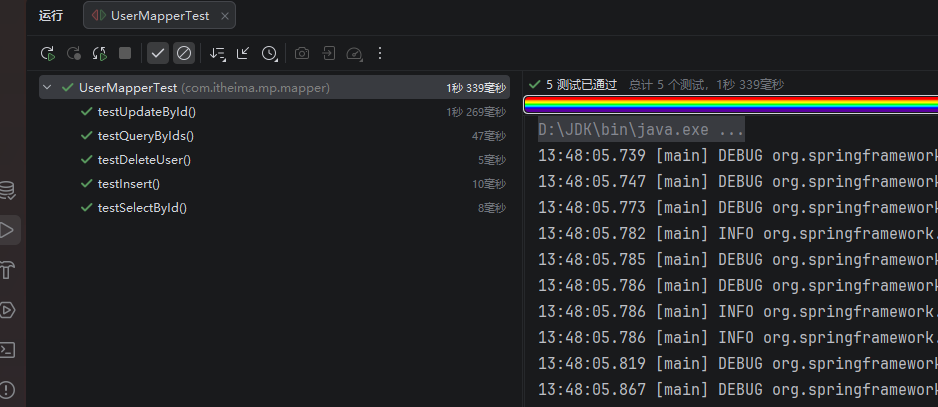
# 为什么 MyBatisPlus 这么快？
MyBatisPlus 通过扫描实体类，基于反射获取到实体类信息座位数据库表基本信息
一下是一些提示
- 类名驼峰转下划线作为表名
- 名为 id 的字段作为主键
- 变量名驼峰转下划线作为表的字段名
# 常用注解
@TableName：用来指定表名
@TableId：用来指定表中的主键字段信息
@TableField：用来指定表中的普通字段信息
# 示例 1—— 表名与类名有明显差异使用 @TableName
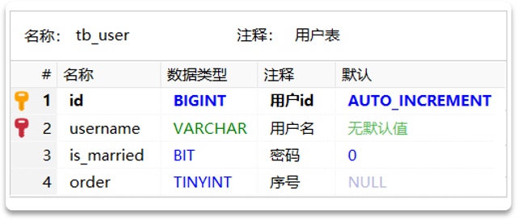
@TableName("tb_user") | |
public class User { | |
private Long id; | |
private String username; | |
private String isMarried; | |
private String order; | |
} |
# 示例 2—— 主键字段名有明显差异使用 @TableId
@TableName("tb_user") | |
public class User { | |
@TableId(value = "id", type = IdType.AUTO) | |
private Long uuid; | |
private String username; | |
private String isMarried; | |
private String order; | |
} |
# type 策略
AUTO：数据库自增长
INPUT：通过 set 方法自行输入
ASSIGN_ID：分配 ID，接口 IdentifierGenerator 的方法 nextId 来生成 id，默认实现类为 DefaultIdentifierGenerator 雪花算法（20 位）
# 示例 3—— 字段名不符合其约定 @TableField
@TableName("tb_user") | |
public class User { | |
@TableId(value = "id", type = IdType.AUTO) | |
private Long uuid; | |
@TableField("username") | |
private String username; | |
@TableField("is_married") | |
private String isMarried; | |
@TableField("`order`") | |
private String order; | |
@TableField(exist = false) | |
private String address; | |
} |
# 使用 @TableField 的常见场景
- 成员变量名与数据库字段名不一致
- 成员变量名以 is 开头，且是布尔值
- 成员变量名与数据库关键字冲突
- 成员变量不是数据库字段
# 常见配置
mybatis-plus: | |
type-aliases-package: com.itheima.mp.domain.po # 别名扫描包 | |
mapper-locations: "classpath*:/mapper/**/*.xml" # Mapper.xml 文件地址，默认值 | |
configuration: | |
map-underscore-to-camel-case: true # 是否开启下划线和驼峰的映射 | |
cache-enabled: false # 是否开启二级缓存 | |
global-config: | |
db-config: | |
id-type: assign_id # id 为雪花算法生成 | |
update-strategy: not_null # 更新策略：只更新非空字段 |
具体可参考官方文档：MyBatisPlus 官方文档
# 条件构造器 Wrapper
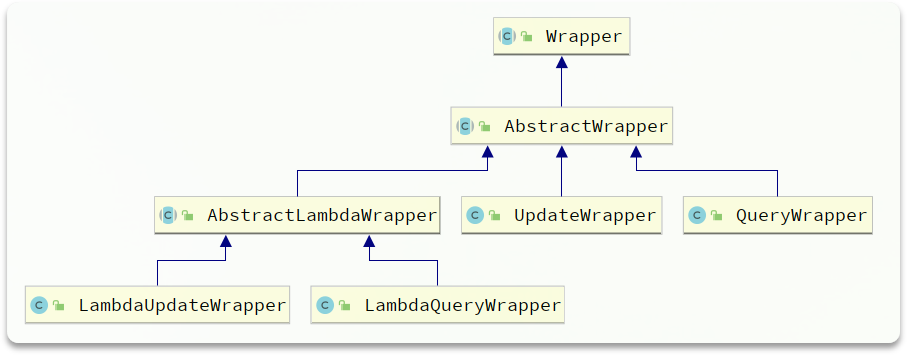
# QueryWrapper 与 LambdaQueryWrapper
@Test | |
public void testWrapper() { | |
QueryWrapper<User> userQueryWrapper = new QueryWrapper<User>() | |
.select("id", "username", "info", "balance") | |
.like("username", "o") | |
.ge("balance", 1000); | |
List<User> users = userMapper.selectList(userQueryWrapper); | |
users.forEach(System.out::println); | |
System.out.println(userMapper.selectList(new LambdaQueryWrapper<User>() | |
.ge(User::getBalance, 1000) | |
.like(User::getUsername, "o") | |
.select(User::getId, User::getUsername, User::getInfo, User::getBalance))); | |
} |
# UpdateWrapper 与 LambdaUpdateWrapper
@Test | |
public void testWrapper() { | |
UpdateWrapper<User> userUpdateWrapper = new UpdateWrapper<User>() | |
.eq("id", 4L) | |
.setSql("balance = balance - 10"); | |
userMapper.update(null, userUpdateWrapper); | |
userMapper.update(null, new LambdaUpdateWrapper<User>() | |
.eq(User::getId, 4L) | |
.setSql("balance = balance - 10")); | |
} |
推荐使用 LQW / LUW 因为其类型安全、较高可维护性、对重构友好。用 Lambda 引用替代字符串字段名，在编译期发现错误，提高代码在重构和长期维护中的安全性。
# 自定义 SQL
@Test | |
public void testZZSQL(){ | |
List<Long> ids = List.of(2L, 3L, 4L); | |
int amount = 2; | |
LambdaUpdateWrapper<User> userLambdaUpdateWrapper = new LambdaUpdateWrapper<User>() | |
.in(User::getId, ids); | |
userMapper.updateByIds(userLambdaUpdateWrapper, amount); | |
} |
public interface UserMapper extends BaseMapper<User> { | |
/** | |
* 根据 id 批量更新余额 | |
* | |
* @param userLambdaUpdateWrapper 条件 | |
* @param amount 金额 | |
*/ | |
// @Update("update tb_user set balance = balance - #{amount} ${ew.customSqlSegment}") | |
void updateByIds(@Param(Constants.WRAPPER) LambdaUpdateWrapper<User> userLambdaUpdateWrapper, @Param("amount") int amount); | |
} |
<mapper namespace="com.itheima.mp.mapper.UserMapper"> | |
<update id="updateByIds"> | |
update tb_user set balance = balance - #{amount} ${ew.customSqlSegment} | |
</update> | |
</mapper> |
Constants.WRAPPER 为 MP 常量就是 ew 在 SQL 中也可以看到有关 ew 的操作： ${ew.customSqlSegment}
# Service 接口
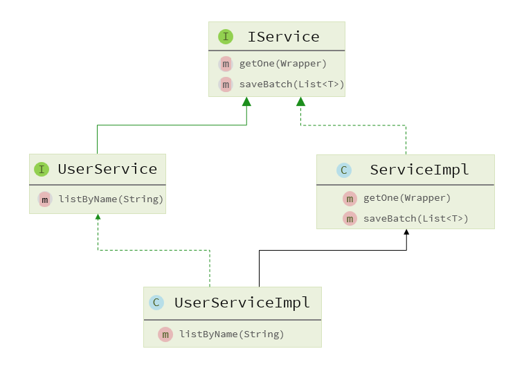
public interface IUserService extends IService<User> { | |
} |
public class UserServiceImpl extends ServiceImpl<UserMapper, User> implements IUserService { | |
} |
这样就可以使用了
@SpringBootTest | |
class UserServiceImplTest { | |
@Autowired | |
private IUserService userService; | |
@Test | |
public void testInsert() throws JsonProcessingException { | |
HashMap<Object, Object> objectObjectHashMap = new HashMap<>(); | |
objectObjectHashMap.put("age", 22); | |
objectObjectHashMap.put("intro", "程序员"); | |
objectObjectHashMap.put("gender", "male"); | |
ObjectMapper objectMapper = new ObjectMapper(); | |
String json = objectMapper.writeValueAsString(objectObjectHashMap); | |
User lkr = User.builder().username("lkr") | |
.password("123123") | |
.phone("666666") | |
.info(json).status(1).balance(45454).build(); | |
userService.save(lkr); | |
} | |
@Test | |
public void testQuery(){ | |
System.out.println(userService.listByIds(List.of(1L, 2L, 3L, 4L))); | |
} | |
} |
# Controller 技巧
通常我们在 Controller 注入 Service 我们会这样写：
@Api(tags = "用户管理接口") | |
@RestController | |
@RequestMapping("/users") | |
public class UserController { | |
@Autowired | |
private IUserService userService; | |
} |
尽管可以，但是 Spring 官方反对的字段注入，因为 Service 层是不会变的，使用 final 更为合适，但字段注入 无法使用 final ，并且容易造成循环依赖
在 IDEA 的自动修复中推荐道：
@Api(tags = "用户管理接口") | |
@RestController | |
@RequestMapping("/users") | |
public class UserController { | |
private final IUserService userService; | |
public UserController(IUserService userService) { | |
this.userService = userService; | |
} | |
} |
尽管快捷键两部就能生成，但是不够优雅，如果你的项目中可以使用 Lombok，我推荐这样写：
@Api(tags = "用户管理接口") | |
@RestController | |
@RequestMapping("/users") | |
@RequiredArgsConstructor | |
public class UserController { | |
private final IUserService userService; | |
} |
这样不仅保持了 @Autowired 的简介模式，还避免了字段注入。 @RequiredArgsConstructor 是自动生成 “必要参数” 的构造方法，“必要参数” 指的是：
final修饰的字段- 被
@NonNull修饰的字段
使用 @RequiredArgsConstructor 注解，会在编译期生成必要参数的构造方法。
# Bean 拷贝技巧
前端或者客户端通常会给我们传一个在我们后端称之为 DTO 的数据，这是一个表单信息，包含了相应实体的核心信息，但是核心始终是核心，并不是完整的源实体，使用 MP 的 IService 方法时，如果你给我传了一个 DTO，这会报错， Bean拷贝 就是为了解决这个问题而诞生的。
# Hutool-BeanUtil 一句话解决问题
BeanUtil.copyProperties(userFormDTO, User.class) |
他会读取 userFormDTO 的信息，然后根据你指定的的类，这里就是 User.class 来生成源实体。
@Api(tags = "用户管理接口") | |
@RestController | |
@RequestMapping("/users") | |
@RequiredArgsConstructor | |
public class UserController { | |
private final IUserService userService; | |
@ApiOperation("新增用户信息") | |
@PostMapping | |
public void saveUser(@RequestBody UserFormDTO userFormDTO) { | |
userService.save(BeanUtil.copyProperties(userFormDTO, User.class)); | |
} | |
} |
# Hutool-BeanUtil 批量拷贝
BeanUtil.copyToList(userService.listByIds(ids),UserVO.class); |
@ApiOperation("根据id批量查询") | |
@GetMapping | |
public List<UserVO> listUser(@RequestParam @ApiParam("用户id列表") List<Long> ids) { | |
return BeanUtil.copyToList(userService.listByIds(ids),UserVO.class); | |
} |
# IService 的 Lambda 查询
lambdaQuery 中有很多很方便的东西。
比如：
@Override | |
public List<User> queryList(String name, Integer status, Integer minBalance, Integer maxBalance) { | |
return this.lambdaQuery() | |
.like(name != null, User::getUsername, name) | |
.eq(status != null, User::getStatus, status) | |
.ge(minBalance != null, User::getBalance, minBalance) | |
.le(maxBalance != null, User::getBalance, maxBalance) | |
.list(); | |
} |
看这两个参数：
boolean condition, R column, Object val |
condition 就是如果是 true 就放行这个条件（使之生效），xxx != null 那就是存在，存在的话就要生效就行。
他很好的解决了 xml 中繁杂的 if 判断：
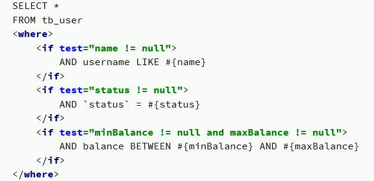
同样的 LambdaUpdate 也可以这样：
boolean update = this.lambdaUpdate() | |
.set(User::getBalance, remainBalance) | |
.set(remainBalance == 0, User::getStatus, 2) | |
.eq(User::getId, id) | |
.update(); |
# 顺便一提乐观锁与悲观锁
@Override | |
@Transactional | |
public void deductBalance(Long id, Integer money) { | |
User user = baseMapper.selectById(id); | |
if (user == null || user.getStatus() == 2) { | |
throw new RuntimeException("用户不存在或者已冻结"); | |
} | |
if (user.getBalance() < money) { | |
throw new RuntimeException("余额不足"); | |
} | |
int remainBalance = user.getBalance() - money; | |
boolean update = this.lambdaUpdate() | |
.set(User::getBalance, remainBalance) | |
.set(remainBalance == 0, User::getStatus, 2) | |
.eq(User::getId, id) | |
.eq(User::getBalance, user.getBalance()) | |
.update(); | |
if (!update) { | |
throw new RuntimeException("更新用户余额失败"); | |
} | |
System.out.println("更新用户余额成功，用户id：" + id + "，用户余额：" + remainBalance); | |
} |
这是乐观锁的一种实现方式，通过在 update 时校验旧的 balance 值来保证并发安全，属于基于 CAS 思想的条件更新，但不是 MyBatisPlus 内置的 @Version 标准乐观锁。
乐观锁和悲观锁都是并发控制手段。乐观锁与悲观锁都是基于一种假设，乐观锁假设冲突很少，更新时才检查数据有没有被别人改过，悲观锁假设冲突一定会发生，操作数据前先把它锁住。
悲观锁假设并发冲突一定发生，在操作数据前先加锁，其他线程必须等待。在高并发、读多写少的场景下一般使用乐观锁，在强一致、冲突频繁的场景才使用悲观锁。
# 批量新增
不要使用 for 循环来添加，请使用：
this.saveBatch() |
推荐通过 MySQL 开启：rewriteBatchedStatements=true 参数，这样会更快。
# 静态工具
静态工具适合用于多表查询问题，如果我们在 AService 需要用到 BService 中的内容时，我们往往会想要在 AService 中注入一个 BService，然而问题在于，如果 BService 也需要 AService 的内容呢？要在 BService 也注入一个 AService 吗，那就产生了循环依赖问题。诚然我们也可以注入一个 BaseMapper，但是毕竟 Service 更加强大，此时 静态工具 应运而生。
@Service | |
public class UserServiceImpl extends ServiceImpl<UserMapper, User> implements IUserService { | |
@Override | |
public UserVO queryUserAndAddressById(Long id) { | |
User user = this.getById(id); | |
if (user == null || user.getStatus() == 2) | |
throw new RuntimeException("用户不存在或者已冻结"); | |
List<Address> addresses = Db.lambdaQuery(Address.class) | |
.eq(Address::getUserId, id) | |
.list(); | |
UserVO userVO = BeanUtil.copyProperties(user, UserVO.class); | |
if (addresses != null){ | |
userVO.setAddressList(BeanUtil.copyToList(addresses, AddressVO.class)); | |
} | |
return userVO; | |
} | |
} |
这是一个在 UserService 中需要查 AddressService 的场景，其实就是要把用户信息和用户地址拼在一起，场景很常见。使用 Db.lambdaQuery(Address.class) 来实现， Db 中时 Service 的方法，只不过是静态的，通过指定类来实现反射。
# 善用 stream 流
@Override | |
public List<UserVO> listUserByIds(List<Long> ids) { | |
List<User> users = this.listByIds(ids); | |
if (users == null) { | |
return Collections.emptyList(); | |
} | |
List<Long> collect = users.stream().map(User::getId).collect(Collectors.toList()); | |
List<Address> addresses = Db.lambdaQuery(Address.class) | |
.in(Address::getUserId, collect) | |
.list(); | |
List<AddressVO> addressVOS = BeanUtil.copyToList(addresses, AddressVO.class); | |
Map<Long, List<AddressVO>> addressMap = new HashMap<>(); | |
if (CollUtil.isNotEmpty(addressVOS)) { | |
addressMap = addressVOS.stream().collect(Collectors.groupingBy(AddressVO::getUserId)); | |
} | |
ArrayList<UserVO> userVOS = new ArrayList<>(users.size()); | |
for (User user : users) { | |
UserVO userVO = BeanUtil.copyProperties(user, UserVO.class); | |
userVOS.add(userVO); | |
userVO.setAddressList(addressMap.get(user.getId())); | |
} | |
return userVOS; | |
} |
# 逻辑删除
mybatis-plus: | |
global-config: | |
db-config: | |
logic-delete-field: flag # 全局逻辑删除的实体字段名，字段类型可以是 boolean、integer | |
logic-delete-value: 1 # 逻辑已删除值 (默认为 1) | |
logic-not-delete-value: 0 # 逻辑未删除值 (默认为 0) |
# 枚举处理器 @EnumValue
@Getter | |
public enum UserStatus { | |
NORMAL(1, "正常"), | |
FROZEN(2, "冻结"); | |
@EnumValue | |
@JsonValue | |
private final int value; | |
private final String desc; | |
UserStatus(int value, String desc) { | |
this.value = value; | |
this.desc = desc; | |
} | |
} |
@EnumValue 指定的是在数据库中实际的存储类型，一般是 bool 类或者 int 类，主要取决你数据库的定义，而 @EnumValue 只需要加载数据库需要的类型上就行，然后返回到前端之前我们一般传一个 JSON，这个时候 @JsonValue 就起作用了， @JsonValue 加在那个数据上面，JSON 就返回哪个数据。当然不要忘记，User、UserVO 中的字段替换成相应的枚举类型。
# JSON 处理器
JSON 处理器的目的是把存储在数据库的 JSON 串转换为 Java 对象。
@TableName(value = "tb_user", autoResultMap = true) | |
public class User { | |
@TableId(type = IdType.AUTO) | |
private Long id; | |
private String username; | |
private String password; | |
private String phone; | |
@TableField(typeHandler = JacksonTypeHandler.class) | |
private UserInfo info; | |
private UserStatus status; | |
private Integer balance; | |
private LocalDateTime createTime; | |
private LocalDateTime updateTime; | |
} |
注意： @TableName(value = "tb_user", autoResultMap = true) 和 @TableField(typeHandler = JacksonTypeHandler.class)
# 插件 —— 分页插件
MyBatisPlus 给我们提供了插件功能这个插件功能首先通过一个总的插件注册器来实现，后续如果我们需要什么插件的话，可以直接在这个总的插件器上进行挂载。
@Configuration | |
public class MyBatisConfig { | |
@Bean | |
public MybatisPlusInterceptor mybatisPlusInterceptor() { | |
MybatisPlusInterceptor interceptor = new MybatisPlusInterceptor(); | |
PaginationInnerInterceptor paginationInnerInterceptor = new PaginationInnerInterceptor(DbType.MYSQL); | |
paginationInnerInterceptor.setMaxLimit(1000L); | |
interceptor.addInnerInterceptor( | |
paginationInnerInterceptor | |
); | |
return interceptor; | |
} | |
} |
# 通用分页实体
@Data | |
@ApiModel(description = "分页查询条件实体") | |
public class PageQuery { | |
@ApiModelProperty("页码") | |
private Integer pageNo; | |
@ApiModelProperty("每页数量") | |
private Integer pageSize; | |
@ApiModelProperty("排序字段") | |
private String sortBy; | |
@ApiModelProperty("是否升序") | |
private Boolean isAsc; | |
} |
其他条件可以继承 page：
@EqualsAndHashCode(callSuper = true) | |
@Data | |
@ApiModel(description = "用户查询条件实体") | |
public class UserQuery extends PageQuery { | |
@ApiModelProperty("用户名关键字") | |
private String name; | |
@ApiModelProperty("用户状态：1-正常，2-冻结") | |
private Integer status; | |
@ApiModelProperty("余额最小值") | |
private Integer minBalance; | |
@ApiModelProperty("余额最大值") | |
private Integer maxBalance; | |
} |
# 通用分页返回实体
@Data | |
@ApiModel(description = "分页结果") | |
public class PageDTO<T> { | |
@ApiModelProperty("总记录数") | |
private Long total; | |
@ApiModelProperty("总页数") | |
private Long pages; | |
@ApiModelProperty("当前页数据") | |
private List<T> list; | |
} |
# 实现案例
@Override | |
public PageDTO<UserVO> queryListPage(UserQuery condition) { | |
Page<User> userPageCondition = Page.of(condition.getPageNo(), condition.getPageSize()); | |
if (condition.getSortBy() != null && !condition.getSortBy().isEmpty()) { | |
userPageCondition.addOrder(new OrderItem().setColumn(condition.getSortBy()).setAsc(condition.getIsAsc())); | |
} else { | |
userPageCondition.addOrder(new OrderItem().setColumn("update_time").setAsc(true)); | |
} | |
Page<User> userPage = lambdaQuery() | |
.like(condition.getName() != null, User::getUsername, condition.getName()) | |
.eq(condition.getStatus() != null, User::getStatus, condition.getStatus()) | |
.ge(condition.getMinBalance() != null, User::getBalance, condition.getMinBalance()) | |
.le(condition.getMaxBalance() != null, User::getBalance, condition.getMaxBalance()) | |
.page(userPageCondition); | |
PageDTO<UserVO> userPageDTO = new PageDTO<>(); | |
userPageDTO.setTotal(userPage.getTotal()); | |
userPageDTO.setPages(userPage.getPages()); | |
List<User> records = userPage.getRecords(); | |
if (records == null) { | |
userPageDTO.setList(Collections.emptyList()); | |
return userPageDTO; | |
} | |
userPageDTO.setList(BeanUtil.copyToList(records, UserVO.class)); | |
return userPageDTO; | |
} |
# 兄弟，还能更方便！
原来这种实现，实际上业务逻辑只占到很小一部分，我来说一下！
代码一开始：
Page<User> userPageCondition = Page.of(condition.getPageNo(), condition.getPageSize()); | |
if (condition.getSortBy() != null && !condition.getSortBy().isEmpty()) { | |
userPageCondition.addOrder(new OrderItem().setColumn(condition.getSortBy()).setAsc(condition.getIsAsc())); | |
} else { | |
userPageCondition.addOrder(new OrderItem().setColumn("update_time").setAsc(true)); | |
} |
构造了一个 Page，然后对需要做排序的条件进行了设置。
这里是我们的核心查询语句：
Page<User> userPage = lambdaQuery() | |
.like(condition.getName() != null, User::getUsername, condition.getName()) | |
.eq(condition.getStatus() != null, User::getStatus, condition.getStatus()) | |
.ge(condition.getMinBalance() != null, User::getBalance, condition.getMinBalance()) | |
.le(condition.getMaxBalance() != null, User::getBalance, condition.getMaxBalance()) | |
.page(userPageCondition); |
紧接着，就是又一次参数的设置和类型转换：
PageDTO<UserVO> userPageDTO = new PageDTO<>(); | |
userPageDTO.setTotal(userPage.getTotal()); | |
userPageDTO.setPages(userPage.getPages()); | |
List<User> records = userPage.getRecords(); | |
if (records == null) { | |
userPageDTO.setList(Collections.emptyList()); | |
return userPageDTO; | |
} | |
userPageDTO.setList(BeanUtil.copyToList(records, UserVO.class)); | |
return userPageDTO; |
我们能不能把创建 Page 和后面的整理 DTO 再进行一次封装呢？
我们可以这样：
- 在 PageQuery 中定义方法，将 PageQuery 对象转为 MyBatisPlus 中的 Page 对象
- 在 PageDTO 中定义方法，将 MyBatisPlus 中的 Page 结果转为 PageDTO 结果
@Data | |
@ApiModel(description = "分页查询条件实体") | |
public class PageQuery { | |
@ApiModelProperty("页码") | |
private Integer pageNo = 1; | |
@ApiModelProperty("每页数量") | |
private Integer pageSize = 5; | |
@ApiModelProperty("排序字段") | |
private String sortBy; | |
@ApiModelProperty("是否升序") | |
private Boolean isAsc = true; | |
public <T> Page<T> toMpPage() { | |
Page<T> userPageCondition = Page.of(pageNo, pageSize); | |
if (sortBy != null && !sortBy.isEmpty()) { | |
userPageCondition.addOrder(new OrderItem().setColumn(sortBy).setAsc(isAsc)); | |
} else { | |
userPageCondition.addOrder(new OrderItem().setColumn("update_time").setAsc(false)); | |
} | |
return userPageCondition; | |
} | |
public <T> Page<T> toMpPage(OrderItem... items) { | |
Page<T> userPageCondition = Page.of(pageNo, pageSize); | |
if (sortBy != null && !sortBy.isEmpty()) { | |
userPageCondition.addOrder(new OrderItem().setColumn(sortBy).setAsc(isAsc)); | |
} else if (items != null) { | |
userPageCondition.addOrder(items); | |
} | |
return userPageCondition; | |
} | |
} |
@Data | |
@ApiModel(description = "分页结果") | |
public class PageDTO<T> { | |
@ApiModelProperty("总记录数") | |
private Long total; | |
@ApiModelProperty("总页数") | |
private Long pages; | |
@ApiModelProperty("当前页数据") | |
private List<T> list; | |
public static <PO, VO> PageDTO<VO> of(Page<PO> pageT, Class<VO> clazz) { | |
PageDTO<VO> userPageDTO = new PageDTO<>(); | |
userPageDTO.setTotal(pageT.getTotal()); | |
userPageDTO.setPages(pageT.getPages()); | |
List<PO> records = pageT.getRecords(); | |
if (records == null || records.isEmpty()) { | |
userPageDTO.setList(Collections.emptyList()); | |
return userPageDTO; | |
} | |
userPageDTO.setList(BeanUtil.copyToList(records, clazz)); | |
return userPageDTO; | |
} | |
public static <PO, VO> PageDTO<VO> of(Page<PO> pageT, Class<VO> clazz, Function<PO, VO> convertor) { | |
PageDTO<VO> userPageDTO = new PageDTO<>(); | |
userPageDTO.setTotal(pageT.getTotal()); | |
userPageDTO.setPages(pageT.getPages()); | |
List<PO> records = pageT.getRecords(); | |
if (records == null || records.isEmpty()) { | |
userPageDTO.setList(Collections.emptyList()); | |
return userPageDTO; | |
} | |
userPageDTO.setList(records.stream().map(convertor).collect(Collectors.toList())); | |
return userPageDTO; | |
} | |
} |
# Demo2_再会 Docker
# 安装
卸载旧版
yum remove docker \ | |
docker-client \ | |
docker-client-latest \ | |
docker-common \ | |
docker-latest \ | |
docker-latest-logrotate \ | |
docker-logrotate \ | |
docker-engine \ | |
docker-selinux |
搭建 Docker 的 apt 仓库。
# Add Docker's official GPG key: | |
sudo apt update | |
sudo apt install ca-certificates curl | |
sudo install -m 0755 -d /etc/apt/keyrings | |
sudo curl -fsSL https://download.docker.com/linux/ubuntu/gpg -o /etc/apt/keyrings/docker.asc | |
sudo chmod a+r /etc/apt/keyrings/docker.asc | |
# Add the repository to Apt sources: | |
sudo tee /etc/apt/sources.list.d/docker.sources <<EOF | |
Types: deb | |
URIs: https://download.docker.com/linux/ubuntu | |
Suites: $(. /etc/os-release && echo "${UBUNTU_CODENAME:-$VERSION_CODENAME}") | |
Components: stable | |
Signed-By: /etc/apt/keyrings/docker.asc | |
EOF | |
sudo apt update |
安装 Docker
sudo apt install docker-ce docker-ce-cli containerd.io docker-buildx-plugin docker-compose-plugin |
Docker 服务安装后会自动启动。要验证 Docker 正在运行，请使用：
sudo systemctl status docker |
前置修复
sudo wget -O /etc/yum.repos.d/CentOS-Base.repo http://mirrors.aliyun.com/repo/Centos-7.repo | |
sudo yum clean all | |
sudo yum makecache |
安装 Docker
yum install -y docker-ce docker-ce-cli containerd.io docker-buildx-plugin docker-compose-plugin |
通过运行 hello-world 镜像验证安装成功：
sudo docker run hello-world |
镜像加速：
mkdir -p /etc/docker | |
sudo mkdir -p /etc/docker | |
sudo tee /etc/docker/daemon.json <<EOF | |
{ | |
"registry-mirrors": [ | |
"https://docker.m.daocloud.io", | |
"https://registry.docker-cn.com" | |
] | |
} | |
EOF | |
systemctl daemon-reload | |
systemctl restart docker |
# 容器化 MySQL
docker run -d \ | |
--name mysql \ | |
-p 3306:3306 \ | |
-e TZ=Asia/Shanghai \ | |
-e MYSQL_ROOT_PASSWORD=123 \ | |
mysql |
docker run 命令中的常见参数:
-d：detached 模式（后台运行）--name：给容器起名字-e：设置环境变量-p：端口映射（宿主机 ↔ 容器）
镜像名称结构：Repository:TAG
比如：nginx:latest、mysql:8.0、redis:7
# 常见命令
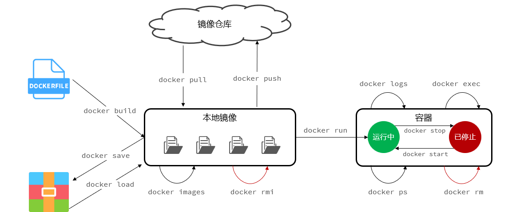
# 拉镜像
docker pull nginx:latest | |
sudo docker images |
# 保存成包
sudo docker save -o nginx.tar nginx:latest |
# 删除镜像
sudo docker rmi nginx:latest |
# 加载镜像
sudo docker load -i nginx.tar |
# 创建并运行容器
~sudo docker run -d --name nginx -p 80:80 nginx |
# 查看容器状态
微博客解析这个有 bug… 只能放图片了。
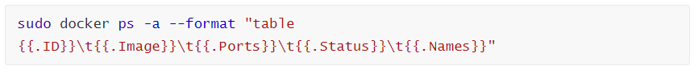
# 停止容器
sudo docker ps stop nginx |
# 再次运行容器，不要用 run
sudo docker start nginx |
# 持续跟踪日志
sudo docker logs -f nginx |
# 进入容器内部
sudo docker exec -it nginx bash |
# 退出容器内部
exit |
# 删除容器
sudo docker rm mysql -f # 非强制删除 | |
sudo docker rm mysql -f # 强制删除 |
# Linux 技巧
长命令可以配置别名：
# 修改别名 | |
vim ~/.bashrc | |
# 生效 | |
source ~/.bashrc |
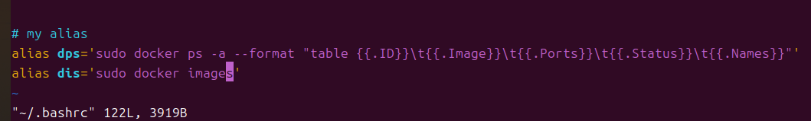
# 数据卷
数据卷是一个虚拟目录，是容器内目录与宿主机目录之间映射的桥梁。
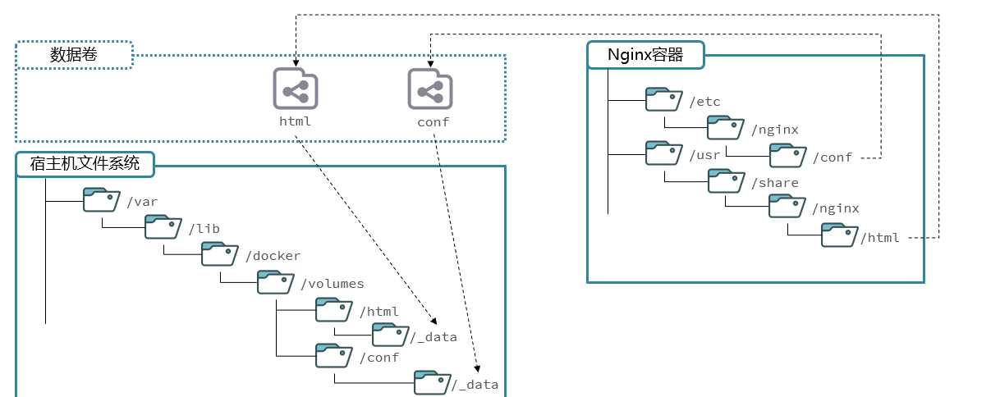
在执行 docker run 命令时，使用 -v 数据卷：容器内目录 可以完成数据卷挂载
# 创建数据卷
docker volume create |
# 查看所有数据卷
docker volume ls |
# 删除指定数据卷
docker volume rm |
# 查看某个数据卷的详情
docker volume inspect |
# 清除数据卷
docker volume prune |
# 创建 nginx 的映射卷
sudo docker run -d --name nginx -p 80:80 -v html:/usr/share/nginx/html nginx |
# 最终的 MySQL 脚本
docker run -d \ | |
--name mysql \ | |
-p 3306:3306 \ | |
-e TZ=Asia/Shanghai \ | |
-e MYSQL_ROOT_PASSWORD=123 \ | |
-v /root/mysql/data:/var/lib/mysql \ | |
-v /root/mysql/init:/docker-entrypoint-initdb.d \ | |
-v /root/mysql/conf:/etc/mysql/conf.d \ | |
mysql |
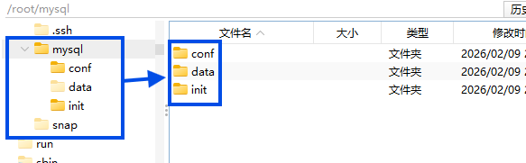
在对应位置创建这三个目录
使用之后可以观察到：
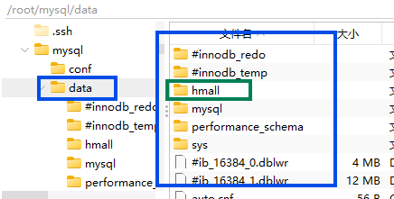
这种方法是基于本地目录直接挂载，由于采用的是目录级别的直接映射，MySQL 的真实数据实际上是存储在宿主机的 /root/mysql/data 目录中，而不是容器内部。
-v /root/mysql/data:/var/lib/mysql \ | |
-v /root/mysql/init:/docker-entrypoint-initdb.d \ | |
-v /root/mysql/conf:/etc/mysql/conf.d \ |
即便我们把 MySQL 容器删除，然后我们又重新创建一个全新的 MySQL 容器，只要我们保证我们还是映射到这三个目录，数据表就不会丢失。
# 自定义镜像
镜像就是包含了应用程序、程序运行的系统函数库、运行配置等文件的文件包。构建镜像的过程其实就是把上述文件打包的过程。
构建一个 Java 镜像的步骤：
- 准备一个 Linux 运行环境
- 安装 JRE 并配置环境变量
- 拷贝 Jar 包
- 编写运行脚本
镜像是分层的：
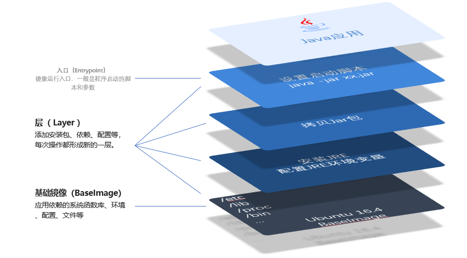
实际上基础层已经有人帮我们构建好，基础层通常为一些核心的函数库，环境配置文件等。我们只需要声明需要什么就可以了。
| 指令 | 说明 | 示例 |
|---|---|---|
| FROM | 指定基础镜像 | FROM centos:6 |
| ENV | 设置环境变量，可在后面指令使用 | ENV key value |
| COPY | 拷贝本地文件到镜像的指定目录 | COPY ./jre11.tar.gz /tmp |
| RUN | 执行 Linux 的 shell 命令，一般是安装过程的命令 | RUN tar -zxvf /tmp/jre11.tar.gz && EXPORTS path=/tmp/jre11:$path |
| EXPOSE | 指定容器运行时监听的端口，是给镜像使用者看的 | EXPOSE 8080 |
| ENTRYPOINT | 镜像中应用的启动命令，容器运行时调用 | ENTRYPOINT java -jar xx.jar |
更新详细语法说明，请参考官网文档： https://docs.docker.com/engine/reference/builder
# Dockerfile
我们可以基于 Ubuntu 基础镜像，利用 Dockerfile 描述镜像结构
# 指定基础镜像 | |
FROM ubuntu:16.04 | |
# 配置环境变量，JDK 的安装目录、容器内时区 | |
ENV JAVA_DIR=/usr/local | |
# 拷贝 jdk 和 java 项目的包 | |
COPY ./jdk8.tar.gz $JAVA_DIR/ | |
COPY ./docker-demo.jar /tmp/app.jar | |
# 安装 JDK | |
RUN cd $JAVA_DIR \ && tar -xf ./jdk8.tar.gz \ && mv ./jdk1.8.0_144 ./java8 | |
# 配置环境变量 | |
ENV JAVA_HOME=$JAVA_DIR/java8 | |
ENV PATH=$PATH:$JAVA_HOME/bin | |
# 入口，java 项目的启动命令 | |
ENTRYPOINT ["java", "-jar", "/app.jar"] |
也可以直接基于 jdk 为基础镜像，省略前面的步骤：
# 基础镜像 | |
FROM openjdk:11.0-jre-buster | |
# 拷贝 jar 包 | |
COPY docker-demo.jar /app.jar | |
# 入口 | |
ENTRYPOINT ["java", "-jar", "/app.jar"] |
当编写好了 Dockerfile，可以利用下面命令来构建镜像：
docker build -t myImage:1.0 . |
-t ：是给镜像起名，格式依然是 repository:tag 的格式，不指定 tag 时，默认为 latest
. ：是指定 Dockerfile 所在目录，如果就在当前目录，则指定为 "."
# Docker 网络
默认情况下，所有容器都是以 bridge 方式连接到 Docker 的一个虚拟网桥上：
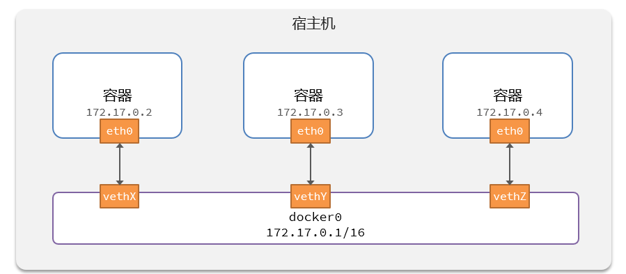
网络号 172.17.0.0，一共 32 位 每八个为一段，也就是 x.x.x.x ， 16 指的就是子网掩码的位数，也叫 **CIDR ** 前缀长度，但 IP 可能会变，我们需要配置一下，更好的方法是使用自定义网络。
加入自定义网络的容器才可以通过容器名互相访问，Docker 的网络操作命令如下：
| 命令 | 说明 | 文档地址 |
|---|---|---|
| docker network create | 创建一个网络 | docker network create |
| docker network ls | 查看所有网络 | docker network ls |
| docker network rm | 删除指定网络 | docker network rm |
| docker network prune | 清除未使用的网络 | docker network prune |
| docker network connect | 使指定容器连接加入某网络 | docker network connect |
| docker network disconnect | 使指定容器连接离开某网络 | docker network disconnect |
| docker network inspect | 查看网络详细信息 | docker network inspect |
# 创建网络 knet
docker network create knet |
# 让 MySQL 连接上
docker network connect knet mysql |
# 让容器在创建时就连接上
docker run -d --name dd -p 8080:8080 --network knet docker-demo |
# 部署 Java 应用
-
构建 Jar 包（省略）
-
编写 DockerFile
# 基础镜像FROM openjdk:11.0-jre-buster# 设定时区ENV TZ=Asia/ShanghaiRUN ln -snf /usr/share/zoneinfo/$TZ /etc/localtime && echo $TZ > /etc/timezone# 拷贝 jar 包COPY hm-service.jar /app.jar# 入口ENTRYPOINT ["java", "-jar", "/app.jar"] -
将 Jar 与 DockerFile 都上传到服务器
-
执行命令
docker run -d --name hm -p 8080:8080 --network knet hmall
# 部署前端应用
docker run -d \ | |
--name nginx \ | |
-p 18080:18080 \ | |
-p 18081:18081 \ | |
-v /root/nginx/html:/usr/share/nginx/html \ | |
-v /root/nginx/nginx.conf:/etc/nginx/nginx.conf \ | |
--network knet \ | |
nginx |
-
路径挂载
-v /root/nginx/html:/usr/share/nginx/html -
文件挂载
-v /root/nginx/nginx.conf:/etc/nginx/nginx.conf -
网络配置
--network knet
# DockerCompose 统一管理与自动部署
Docker Compose 通过一个单独的 docker-compose.yml 模板文件来定义一组相关联的应用容器，帮助我们实现多个相互关联的 Docker 容器的快速部署。
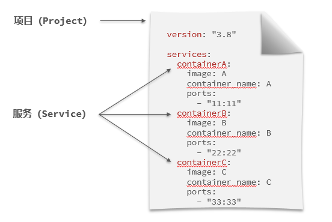
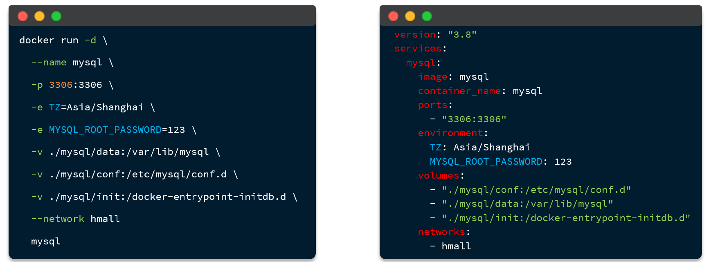
DockerCompose 的命令格式如下：
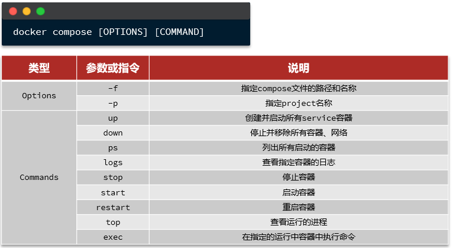
version: "3.8" | |
services: | |
mysql: | |
image: mysql | |
container_name: mysql | |
ports: | |
- "3306:3306" | |
environment: | |
TZ: Asia/Shanghai | |
MYSQL_ROOT_PASSWORD: 123 | |
volumes: | |
- "./mysql/conf:/etc/mysql/conf.d" | |
- "./mysql/data:/var/lib/mysql" | |
- "./mysql/init:/docker-entrypoint-initdb.d" | |
networks: | |
- hm-net | |
hmall: | |
build: | |
context: . | |
dockerfile: Dockerfile | |
container_name: hmall | |
ports: | |
- "8080:8080" | |
networks: | |
- hm-net | |
depends_on: | |
- mysql | |
nginx: | |
image: nginx | |
container_name: nginx | |
ports: | |
- "18080:18080" | |
- "18081:18081" | |
volumes: | |
- "./nginx/nginx.conf:/etc/nginx/nginx.conf" | |
- "./nginx/html:/usr/share/nginx/html" | |
depends_on: | |
- hmall | |
networks: | |
- hm-net | |
networks: | |
hm-net: | |
name: hmall |
执行：
docker compose up -d |
这个和 DockerRun 基本上类似的，但远不止于此，多实例部署、负载均衡等。
# Demo03—— 动手拆分微服务
# 单体架构与微服务架构的区别
简单来说，单体架构像是一台 **“全能的一体机”，而微服务架构则像是一套 “乐高积木”**。两者没有绝对的优劣，只有是否适合你的业务场景。
# 了解模块
- 用户模块
- 商品模块
- 购物车模块
- 订单模块
- 支付模块
下面是登录的时序图：
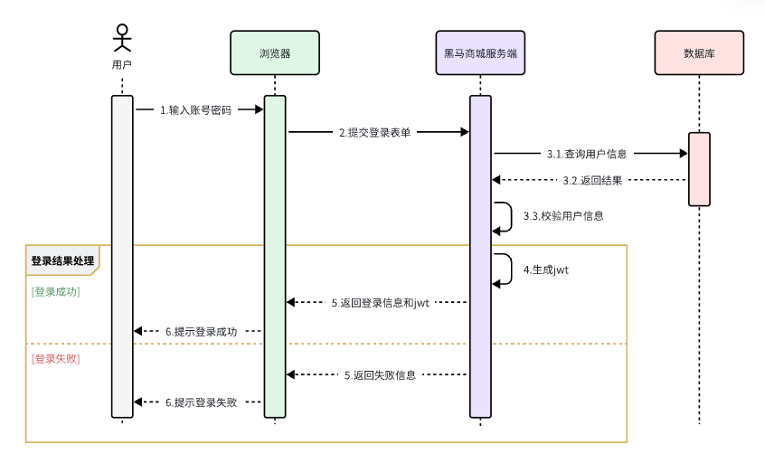
# 服务拆分原则
什么时候需要把单体架构拆分为微服务？创业型项目建议先用单体架构，快速开发快速试错，随着规模扩大逐步拆分。已确定的大型项目推荐直接使用微服务架构。
从拆分角度来讲尽可能的做到单一职责，高内聚，低耦合。横向拆分：抽取公共类，提高复用性。纵向拆分：按照业务模块拆分。
服务被拆分后，每一个都是一个项目，或者说是模块。
# 动手拆分
# 拆分商品管理
首先，为什么我们要从这里来开始拆分，因为商品管理是属于无前置依赖的。何为无前置依赖呢？经过观察我们可以发现，在商品管理的 service 中，或者由于业务简单，这里大量在 controller 中使用了 MP 框架直接进行数据操纵，没有出现服务与服务之间的调用，因此这是最简单、最易入手的拆分起点。
创建一个 ItemService 模块：
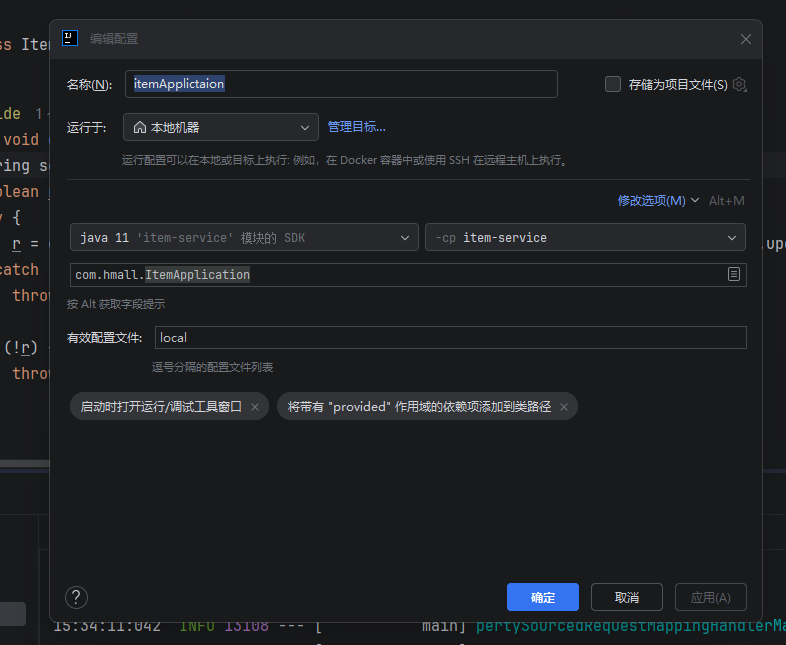
首先拷贝并修改偏置：
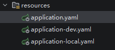
修改端口、服务名、库地址。
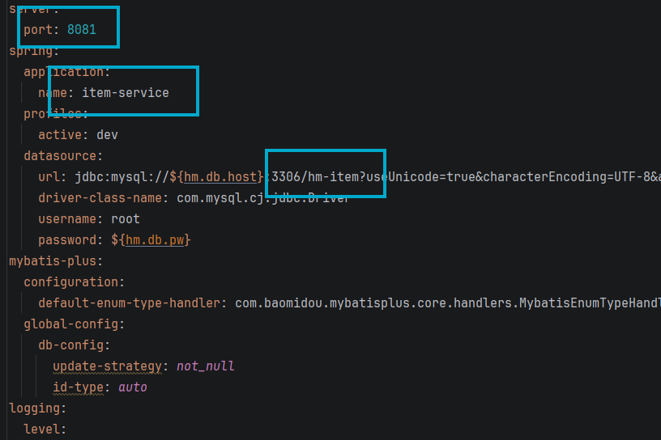
拷贝与商品相关的类：
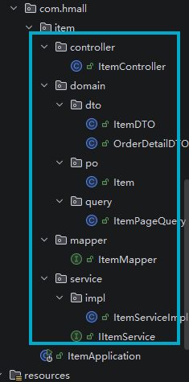
# 拆分购物车
与商品管理一样如法炮制：
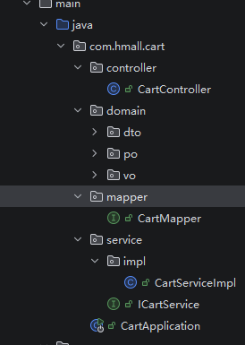
不过在购物车并不是一个无前置依赖的服务，在其中它依赖于我们刚刚拆分出来的商品管理有关的内容。
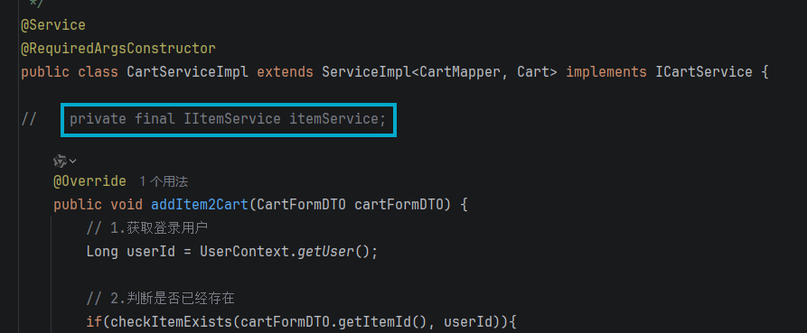
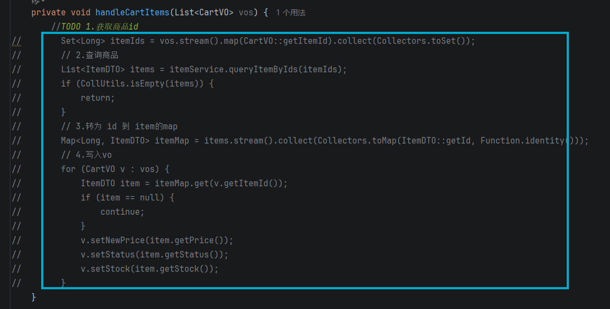
因此我们先将以上内容注释掉。
还有就是，当我们调用查询我们自己的购物车的时候，实际上我们并没有向 UserContext 注入有关信息，所以会出现查询为空的情况：
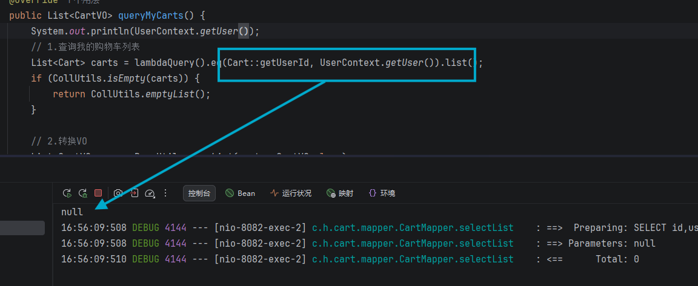
所以我们先把他注释掉：
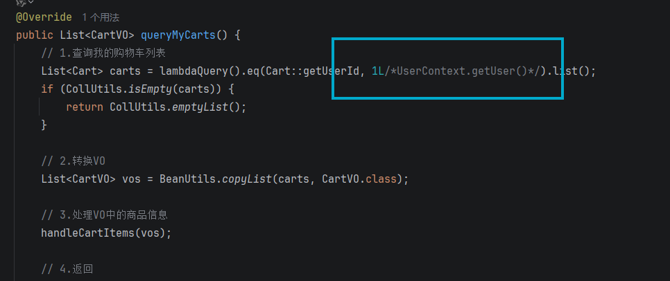
下面我们来解决这个问题。那么两个服务如何相互调用？最简单的我们会想到可以在服务间发送 HTTP 请求。我们先用 RestTemplate 来实现一下。
@Bean | |
public RestTemplate restTemplate(){ | |
return new RestTemplate(); | |
} |
ResponseEntity<List<ItemDTO>> response = restTemplate.exchange( | |
"http://localhost:8081/items?ids={ids}", | |
HttpMethod.GET, | |
null, | |
new ParameterizedTypeReference<List<ItemDTO>>() { | |
}, | |
Map.of("ids", CollectionUtil.join(itemIds, ",")) | |
); | |
if (!response.getStatusCode().is2xxSuccessful()) { | |
throw new RuntimeException("查询商品信息失败"); | |
} | |
List<ItemDTO> items = response.getBody(); |
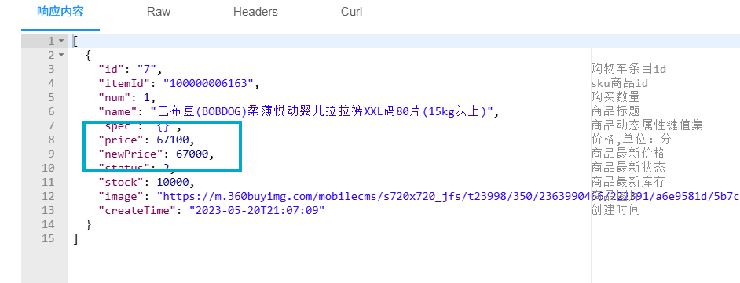
但是这也太多硬编码了吧？如果有多实例的时候怎么办？如果服务挂了怎么办？能不能重试？能不能负载均衡的访问？就算我们用代码实现了，可是这些代码和业务有关系吗？好，如果你也这样觉得，那要恭喜你了，确实有更灵活，更好的调用方式。
# 注册中心
注册中心维护着一张动态的 “通讯录”。服务提供者启动时自动把自己的 IP 和端口报备给注册中心（服务注册）；消费者不再写死地址，而是根据服务名去询问地址（服务发现）。
# Nacos 注册中心
# 服务注册
添加依赖：
<!--nacos 服务注册发现-->
<dependency>
<groupId>com.alibaba.cloud</groupId>
<artifactId>spring-cloud-starter-alibaba-nacos-discovery</artifactId>
</dependency>
在 item-service 的 application.yml 中添加 nacos 地址配置：
spring:
application:
name: item-service # 服务名称
cloud:
nacos:
server-addr: 192.168.3.172:8848 # nacos地址
注册一个发现服务：
private final DiscoveryClient discoveryClient; |
重写一下刚才的调用：
List<ServiceInstance> instances = discoveryClient.getInstances("item-service"); | |
if (CollUtils.isEmpty(instances)){ | |
return; | |
} | |
ServiceInstance instance = instances.get(RandomUtil.randomInt(instances.size())); | |
ResponseEntity<List<ItemDTO>> response = restTemplate.exchange( | |
instance.getUri()+"/items?ids={ids}", | |
HttpMethod.GET, | |
null, | |
new ParameterizedTypeReference<List<ItemDTO>>() { | |
}, | |
Map.of("ids", CollectionUtil.join(itemIds, ",")) | |
); |
现在我们不需要知道它的 IP 与端口号，通过获取 URI 就可以调用了。可是上面这些是不是还是太麻烦了？请求方式？请求路径？JSON 解析？传参？能不能再简单一点！
# OpenFeign 远程调用
引入依赖：
<!--openFeign--> | |
<dependency> | |
<groupId>org.springframework.cloud</groupId> | |
<artifactId>spring-cloud-starter-openfeign</artifactId> | |
</dependency> | |
<!-- 负载均衡器 --> | |
<dependency> | |
<groupId>org.springframework.cloud</groupId> | |
<artifactId>spring-cloud-starter-loadbalancer</artifactId> | |
</dependency> |
在 SpringBoot 启动类中开启 @EnableFeginClients
引入：
private final ItemClient itemClient; |
直接就简化了：
List<ItemDTO> items = itemClient.queryItemByIds(itemIds); |
# 连接池
OpenFeign 最 HTTP 请求也做了封装，对底层 HTTP 请求的请求框架可以自己选择，现在包括以下三种：
- HttpURLConnection：默认实现，不支持连接池
- Apache HttpClient：支持连接池
- OKHttp：支持连接池
引入 OKHttp 依赖：
<!--OK http 的依赖 --> | |
<dependency> | |
<groupId>io.github.openfeign</groupId> | |
<artifactId>feign-okhttp</artifactId> | |
</dependency> |
加入注解：
feign: | |
okhttp: | |
enabled: true # 开启 OKHttp 功能 |
# 最佳实践
将 Client 有关单独抽出来一个模块：
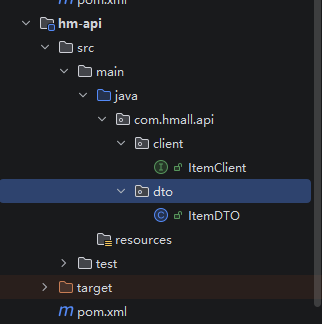
请求方主动提供扫描包路径：
@EnableFeignClients(basePackages = "com.hmall.api.client") |
# 日志
编写日志配置类：
public class DefaultFeignConfig { | |
@Bean | |
public Logger.Level defaultFeignLoggerLevel() { | |
return Logger.Level.FULL; | |
} | |
} |
开启日志：
@EnableFeignClients(basePackages = "com.hmall.api.client", defaultConfiguration = DefaultFeignConfig.class) |
# 用同样的方法改造
同样，改造支付模块、订单模块和用户模块：
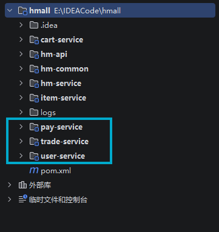
# Gateway 网关
网关主要解决的是，当微服务向外暴露不同的端口时，前端该如何请求？登录后，用户信息与校验如何共享？能否保证安全？
当我们使用网关时，前端无需做出其他修改，直接请求 8080 即可，网关会为你自动路由，并且网关也会为你进行负载均衡。当然我们的网关也是会上注册中心的，当微服务出现地址变更的时候，注册中心会为网关推送最新的地址。网关也会为我们进行身份校验，校验通过后，当我们要请求深层的微服务时，网关还会带着你的身份信息进行向下传递。网关的存在，方便的前端的请求，也保护了后端的微服务。
既然网关会上注册中心，因此网关本身也是一个独立的微服务。
# 创建网关服务
首先创建一个独立的网关模块，然后引入以下依赖：
<?xml version="1.0" encoding="UTF-8"?> | |
<project xmlns="http://maven.apache.org/POM/4.0.0" | |
xmlns:xsi="http://www.w3.org/2001/XMLSchema-instance" | |
xsi:schemaLocation="http://maven.apache.org/POM/4.0.0 http://maven.apache.org/xsd/maven-4.0.0.xsd"> | |
<parent> | |
<artifactId>hmall</artifactId> | |
<groupId>com.heima</groupId> | |
<version>1.0.0</version> | |
</parent> | |
<modelVersion>4.0.0</modelVersion> | |
<artifactId>hm-gateway</artifactId> | |
<properties> | |
<maven.compiler.source>11</maven.compiler.source> | |
<maven.compiler.target>11</maven.compiler.target> | |
</properties> | |
<dependencies> | |
<!--common--> | |
<dependency> | |
<groupId>com.heima</groupId> | |
<artifactId>hm-common</artifactId> | |
<version>1.0.0</version> | |
</dependency> | |
<!-- 网关 --> | |
<dependency> | |
<groupId>org.springframework.cloud</groupId> | |
<artifactId>spring-cloud-starter-gateway</artifactId> | |
</dependency> | |
<!--nacos discovery--> | |
<dependency> | |
<groupId>com.alibaba.cloud</groupId> | |
<artifactId>spring-cloud-starter-alibaba-nacos-discovery</artifactId> | |
</dependency> | |
<!-- 负载均衡 --> | |
<dependency> | |
<groupId>org.springframework.cloud</groupId> | |
<artifactId>spring-cloud-starter-loadbalancer</artifactId> | |
</dependency> | |
</dependencies> | |
<build> | |
<finalName>${project.artifactId}</finalName> | |
<plugins> | |
<plugin> | |
<groupId>org.springframework.boot</groupId> | |
<artifactId>spring-boot-maven-plugin</artifactId> | |
</plugin> | |
</plugins> | |
</build> | |
</project> |
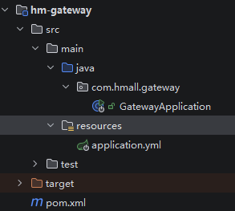
编写网关配置：
server: | |
port: 8080 | |
spring: | |
application: | |
name: gateway | |
cloud: | |
nacos: | |
server-addr: 192.168.3.172:8848 | |
gateway: | |
routes: | |
- id: item-service | |
uri: lb://item-service | |
predicates: | |
- Path=/items/**, /search/** | |
- id: user-service | |
uri: lb://user-service | |
predicates: | |
- Path=/users/**, /addresses/** | |
- id: trade-service | |
uri: lb://trade-service | |
predicates: | |
- Path=/orders/** | |
- id: pay-service | |
uri: lb://pay-service | |
predicates: | |
- Path=/pay-orders/** | |
- id: carts-service | |
uri: lb://cart-service | |
predicates: | |
- Path=/carts/** |
其中 id 时网关转发路径唯一标识，推荐使用与微服务一致的命名，URI 是网关要去请求的路径，lb 是 LoadBalance 负载均衡的缩写，后面跟上微服务的请求名，predicates 路由断言，可以先理解成拦截或者说是对怎样的路径来源进行转发，路径可以是个列表。
# 路由断言
| 名称 | 说明 | 示例 |
|---|---|---|
| After | 是某个时间点后的请求 | - After=2037-01-20T17:42:47.789-07:00[America/Denver] |
| Before | 是某个时间点之前的请求 | - Before=2031-04-13T15:14:47.433+08:00[Asia/Shanghai] |
| Between | 是某两个时间点之前的请求 | - Between=2037-01-20T17:42:47.789-07:00[America/Denver], 2037-01-21T17:42:47.789-07:00[America/Denver] |
| Cookie | 请求必须包含某些 cookie | - Cookie=chocolate, ch.p |
| Header | 请求必须包含某些 header | - Header=X-Request-Id, \d+ |
| Host | 请求必须是访问某个 host（域名） | - Host=.somehost.org,.anotherhost.org |
| Method | 请求方式必须是指定方式 | - Method=GET,POST |
| Path | 请求路径必须符合指定规则 | - Path=/red/{segment},/blue/** |
| Query | 请求参数必须包含指定参数 | - Query=name, Jack 或者 - Query=name |
| RemoteAddr | 请求者的 ip 必须是指定范围 | - RemoteAddr=192.168.1.1/24 |
| weight | 权重处理 |
# 过滤器
Spring Cloud 提供了 30 多种内置工厂，如 AddRequestHeader , RedirectTo , RequestRateLimiter 等。
default-filters: | |
- AddRequestHeader=hhKarry, may all the beauty be blessed |
# 网关如何做 JWT 校验？
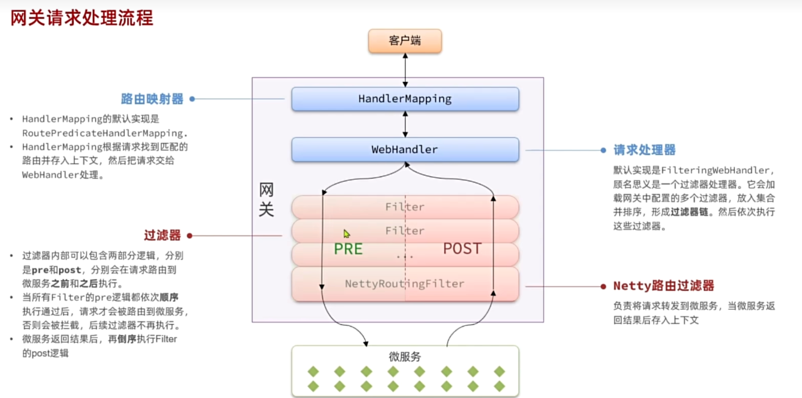
我们需要自定义过滤器，且要在 PRE 逻辑中，但是网关如何将用户信息传递到下层微服务？微服务之间如何传递用户信息？
# 自定义过滤器
GatewayFilter 与 GlobalFilter，如果你要做通用的业务，如统一身份验证、全局监控、黑名单拦截），请选择 GlobalFilter。
如果你要做 ** 特定路由的业务，** 如，给某个接口去前缀 StripPrefix 、特定的限流策略、修改特定的响应头，请选择 GatewayFilter。
在网关服务中创建：MyGlobalFilter
@Component | |
public class MyGlobalFilter implements GlobalFilter, Ordered { | |
@Override | |
public Mono<Void> filter(ServerWebExchange exchange, GatewayFilterChain chain) { | |
// TODO 模拟登录校验 | |
HttpHeaders headers = exchange.getRequest().getHeaders(); | |
System.out.println("header" + headers); | |
return chain.filter(exchange); | |
} | |
@Override | |
public int getOrder() { | |
return 0; | |
} | |
} |
登录校验：
@RequiredArgsConstructor | |
@Component | |
public class AuthGlobalFilter implements GlobalFilter, Ordered { | |
private final AuthProperties authProperties; | |
private final JwtTool jwtTool; | |
private final AntPathMatcher matcher = new AntPathMatcher(); | |
@Override | |
public Mono<Void> filter(ServerWebExchange exchange, GatewayFilterChain chain) { | |
ServerHttpRequest request = exchange.getRequest(); | |
if (isExclude(request.getPath().toString())) { | |
return chain.filter(exchange); | |
} | |
// 获取 token | |
String token = request.getHeaders().getFirst("authorization"); | |
if (token == null) { | |
return chain.filter(exchange); | |
} | |
Long userId; | |
// 解析 token | |
try { | |
userId = jwtTool.parseToken(token); | |
} catch (UnauthorizedException e) { | |
// 响应 401 | |
ServerHttpResponse response = exchange.getResponse(); | |
response.setStatusCode(HttpStatus.UNAUTHORIZED); | |
return response.setComplete(); | |
} | |
System.out.println("用户已登录" + userId); | |
return chain.filter(exchange); | |
} | |
private boolean isExclude(String string) { | |
for (String path : authProperties.getExcludePaths()) { | |
if (matcher.match(path, string)) { | |
return true; | |
} | |
} | |
return false; | |
} | |
@Override | |
public int getOrder() { | |
return 0; | |
} | |
} |
# 网关如何将用户信息向下传递（Gateway）
-
根据我们之前所说的，网关首先需要一次全局过滤，因为所有的请求先打到网关，那么其实一些不需要权限验证的路径我们完全可以选择跳过，比如登录接口如果不是那种接口的话，我们就进行下一步操作。
-
前端往往会给我们在请求头的 Authorization 中加入后端返回的 Token 信息，我们需要对他进行一次截获，然后解析，如果通过 JwtTool 成功解析的话那就说明 Token 有效，可以继续进行下一步操作，否则就需要标记为未授权，并直接终止其请求。
-
那么到了这里，说明网关已经成功将这次请求视为已授权请求，他需要向下告知其他微服务，在这里就是通过 exchange.mutate 在请求头中塞入 user-info，当然可以是结构性数据，也可以是纯粹的用户唯一标识。exchange.mutate 是一次链式编程，他会返回一个全新的 ServerWebExchange，我们需要将这个 swe 通过 chain.filter (swe) 返回。
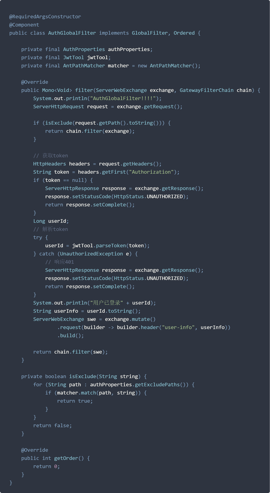
-
好那么下一步就是，其他的微服务怎么获取到这个 userInfo 信息？首先他在请求头中，我们可以设置一个统一的拦截器来获取。这个 preHandle 只做一件事，那就是检查能否从请求头中获取到 user-info，如果有就使用 UserContext 将其存到 ThreadLocal 之中。
-
那么在请求完成之后要记得清理 ThreadLocal。
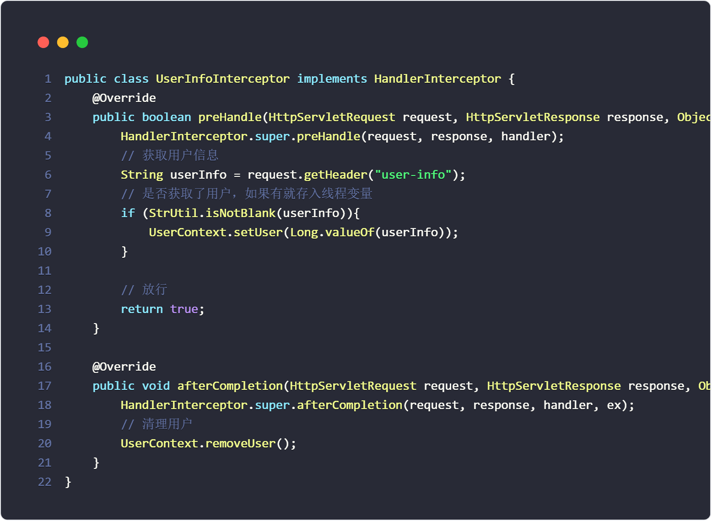
-
拦截器设置完成之后，我们需要把这个拦截器注册到容器里，我们使用 MvcConfig 继承 WebMvcConfigurer 通过 registry.addInterceptor 注册即可。
-
这里我们还设置了：@ConditionalOnClass (DispatcherServlet.class)，这是因为在微服务的网关中，没有 Mvc 的依赖，所以你设置 Mvc 有关的配置，网关是会报错的，因此我们通过 DispatcherServlet.class 来使得其不在网关中生效。
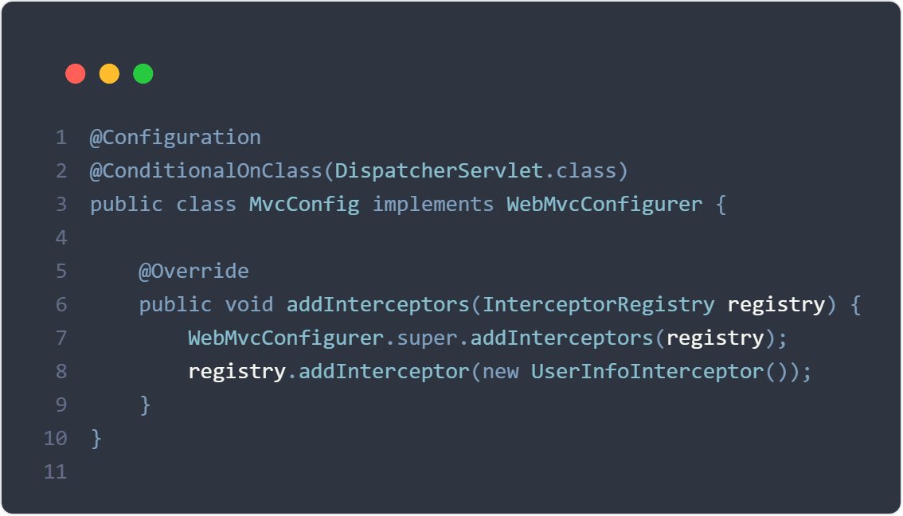
-
然而这个时候，MvcConfig 并没有生效，因为 MvcConfig 在 common 模块中，而 Spring Boot 默认不会扫描依赖 Jar 里的 @Configuration，所以需要通过 EnableAutoConfiguration 显式让 Spring Boot 加载它。
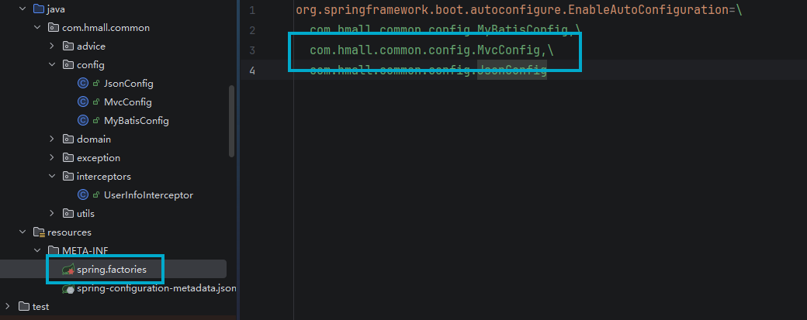
为什么 Spring Cloud 网关要用 GlobalFilter，而微服务要用 HandlerInterceptor？
Spring Cloud Gateway 使用 GlobalFilter 是因为它基于 WebFlux 的响应式编程模型，而微服务通常基于 Spring MVC 的 Servlet 模型。WebFlux 没有 DispatcherServlet 和 HandlerInterceptor 机制，因此需要使用 GlobalFilter 进行全局拦截；而 Spring MVC 依赖 DispatcherServlet 调度请求，所以通过 HandlerInterceptor 实现业务层拦截。
# 用户信息如何在微服务间进行传递（OpenFeign）
OpenFeign 的调用，不同于 Gateway，Gateway 在每次独立的请求中通过拦截器向下传递用户信息，但这种传递是单次的，因为如果我们的业务复杂度高，势必会出现微服务于微服务之间的调用，此时这种之间的调用那一定不是由 Gateway 网关完成的，每次微服务间的调用是由 OpenFeign 实现的，然而我们并没有为 OpenFeign 设置有关拦截处理，因此无法从 UserContext 中获取到相应的 UID。
public class DefaultFeignConfig { | |
@Bean | |
public Logger.Level defaultFeignLoggerLevel() { | |
return Logger.Level.FULL; | |
} | |
@Bean | |
public RequestInterceptor userRequestInterceptor() { | |
return new RequestInterceptor() { | |
@Override | |
public void apply(feign.RequestTemplate requestTemplate) { | |
Long userId = UserContext.getUser(); | |
if (userId != null) { | |
requestTemplate.header("user-info", userId.toString()); | |
} | |
} | |
}; | |
} | |
} |
如上述代码所示，这是一个 OpenFeign 的配置，在使用 Feign 调用其他微服务时，把当前登录用户的 userId 自动放到请求头中传递出去。这段代码的执行时机就是 微服务 A 通过 Feign 向微服务 B 发送 HTTP 请求之前。
ThreadLocal 是线程级别的数据存储，只能在同一个线程中共享。在 trade-service 中调用 OpenFeign 时，Feign 拦截器可以在当前线程中，从 ThreadLocal（UserContext）获取用户信息，并将其写入 HTTP Header。当请求到达 cart-service 时，cart-service 再通过拦截器从 Header 中读取，用户信息并重新放入 ThreadLocal，从而在当前服务内部实现数据共享。
同一个请求共享 ThreadLocal ，当微服务发起一个新请求时，那里是一个全新的 ThreadLocal ，两个 ThreadLocal 相互独立。
ThreadLocal 只能在同一线程中共享数据。微服务之间调用（例如 trade 调 cart）实际上是新的 HTTP 请求，ThreadLocal 不会自动传递。因此需要通过 Feign 拦截器把 ThreadLocal 中的数据写入请求 Header，再在下游服务中，通过拦截器读取 Header 并重新放入 ThreadLocal。
# 配置管理 —— 微服务配置的 “预制菜”
- 每个服务都有自己的配置（数据库连接、消息队列、API 地址、限流策略等）
- 服务数量可能几十、几百
- 配置可能需要动态调整（灰度发布、限流、开关功能）
如果每个服务都单独管理配置：
- 运维压力大：配置分散在各个服务，改一个参数要登几十台服务器。
- 不一致风险：可能不同环境、不同服务配置不一致。
- 不支持动态变更：服务已经启动了，改配置还需要重启服务。
配置管理就是把原本分散、静态、易出错的配置集中、动态、可管理化，解决微服务环境下的维护和运维痛点。
# Nacos 配置中心
引入依赖：
<!--nacos 配置管理 --> | |
<dependency> | |
<groupId>com.alibaba.cloud</groupId> | |
<artifactId>spring-cloud-starter-alibaba-nacos-config</artifactId> | |
</dependency> | |
<!-- 读取 bootstrap 文件 --> | |
<dependency> | |
<groupId>org.springframework.cloud</groupId> | |
<artifactId>spring-cloud-starter-bootstrap</artifactId> |
配置加载流程：
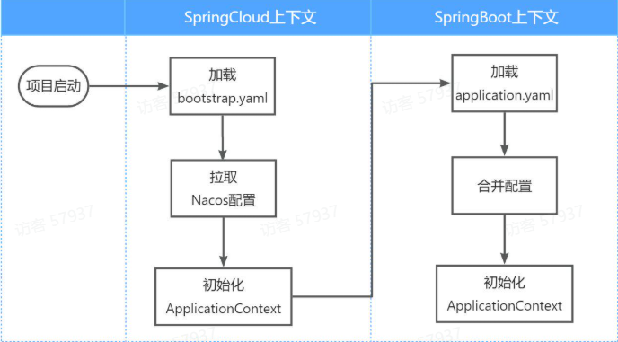
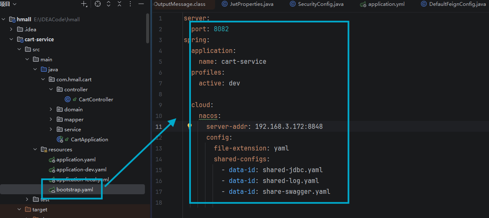
bootstrap 相当于一个引导配置，核心在于取指定 Nacos 地址和所需要加载的共享配置，我觉得这个配置共享就像预制菜。
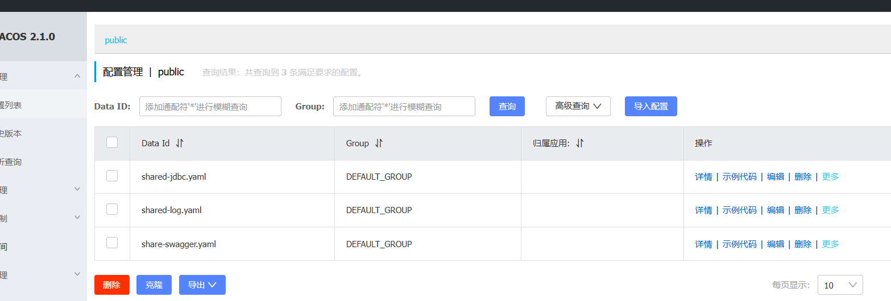
请看这里：
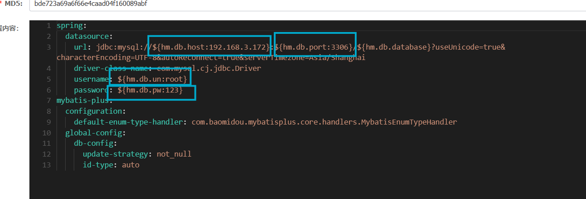
大家都需要的就被预制出来了，然而每个微服务需要一些定制化的 “口味”，所以这里用配置占位符完成。
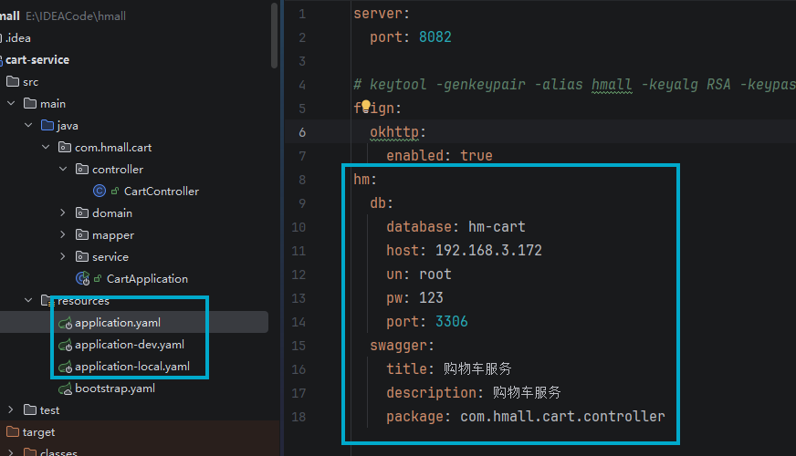
如上图所示，一些具体的配置通过自定义的模式完成。
# 微服务配置的热更新 —— 重做不满意的 “菜品”
热更新也就是当配置发生变化时，无需重启。
-
在 Nacos 中定义一个于微服务有关的配置，名字构成是：微服务名称 - 项目 profile. 后缀
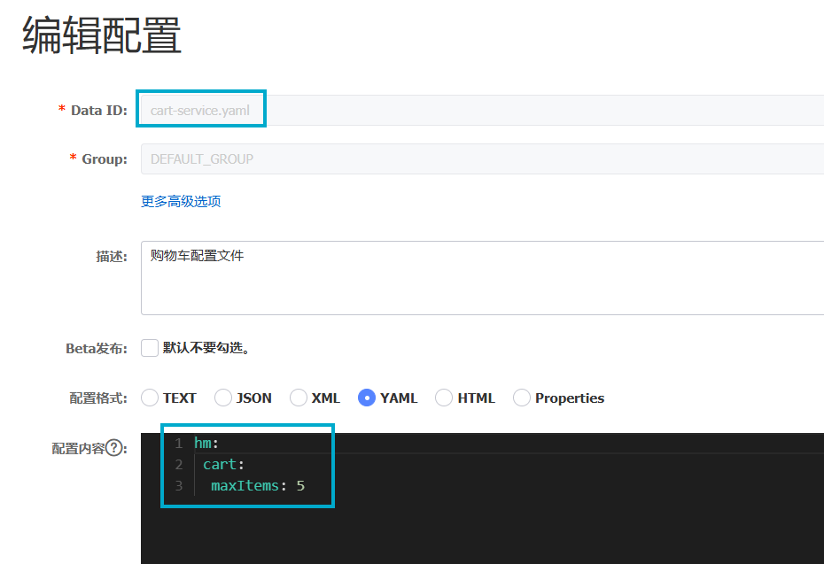
-
利用 @ConfigurationProperties 加载属性
@Data@Component@ConfigurationProperties(prefix = "hm.cart")
public class CartProperties {
private Integer maxItems;
} -
后续访问的时候通过属性注入的方式即可
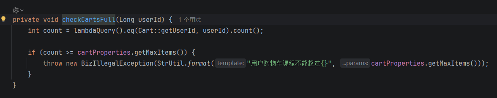
# 动态路由
- 利用 NacosConfigManager 拉取与注册
- 下面通过 RoutDifinitWriter 进行路由删除与重写
@Slf4j | |
@Component | |
@RequiredArgsConstructor | |
public class DynamicRouteLoader { | |
private final NacosConfigManager nacosConfigManager; | |
private final RouteDefinitionWriter writer; | |
private final String dataId = "gateway-route.json"; | |
private final String group = "DEFAULT_GROUP"; | |
private final Set<String> routeIds = new HashSet<>(); | |
@PostConstruct | |
public void init() throws NacosException { | |
log.info("初始化动态路由"); | |
// 拉取配置信息 | |
String configInfo = nacosConfigManager.getConfigService() | |
.getConfigAndSignListener(dataId, group, 5000, new Listener() { | |
@Override | |
public Executor getExecutor() { | |
return null; | |
} | |
@Override | |
public void receiveConfigInfo(String configInfo) { | |
// 监听到配置变更 | |
updateConfigInfo(configInfo); | |
} | |
}); | |
// 第一次启动，获取配置的信息 | |
} | |
public void updateConfigInfo(String configInfo) { | |
log.info("监听到配置变更(updateConfigInfo):{}", configInfo); | |
// 解析配置文件转为 RouteDefinition | |
List<RouteDefinition> routeDefinitions = JSONUtil.toList(configInfo, RouteDefinition.class); | |
// 删除旧的路由表 | |
routeIds.forEach(id -> { | |
writer.delete(Mono.just(id)).subscribe(); | |
}); | |
// 清空路由表 ID | |
routeIds.clear(); | |
// 更新路由表 | |
for (RouteDefinition routeDefinition : routeDefinitions) { | |
writer.save(Mono.just(routeDefinition)).subscribe(); | |
// 记录路由表 ID 以便下次删除 | |
routeIds.add(routeDefinition.getId()); | |
} | |
} | |
} |
# 微服务保护与分布式事务
# 雪崩问题
在微服务架构中，“雪崩效应” 是一种因级联故障导致整个系统瘫痪的现象。简单来说，就是底层服务的微小故障，经过层层传递和放大，最终让原本健康的高层服务也随之崩溃。
# 如何解决
微服务保护的方案有很多，比如：
- 请求限流：流量整形，保护服务的提供者。（提供者）
- 线程隔离：限定每一个业务使用的服务数量，服务的请求者有有限的线程池。类似于船舱模型。（调用者）
- 服务熔断：断路器统计请求异常比例，超出异常阈值，就会熔断这个业务。失败时执行 fallback 兜底逻辑。（调用者）
# Sentinel 服务保护
首先需要下载 Sentinel 中间件：https://github.com/alibaba/Sentinel/releases
然后通过命令运行：
java -Dserver.port=8090 -Dcsp.sentinel.dashboard.server=localhost:8090 -Dproject.name=sentinel-dashboard -jar sentinel-dashboard.jar |
访问：http://localhost:8090/，用户名和密码均为 sentinel。
在需要监控服务下引入依赖：
<!--sentinel--> | |
<dependency> | |
<groupId>com.alibaba.cloud</groupId> | |
<artifactId>spring-cloud-starter-alibaba-sentinel</artifactId> | |
</dependency> |
在 yml 中加入配置：
spring: | |
cloud: | |
sentinel: | |
transport: | |
dashboard: localhost:8090 | |
http-method-specify: true # 允许使用 httpMethod 进行限流 |
重启指定微服务，多次访问接口后就会出现流量：
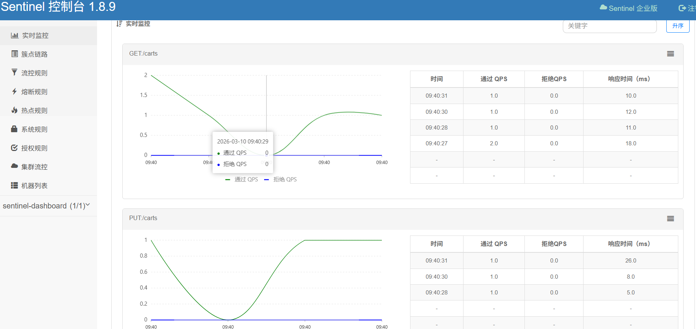
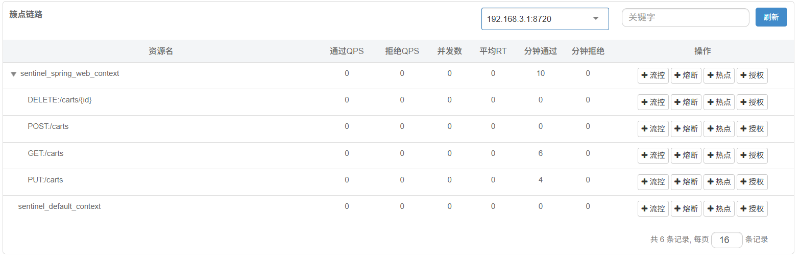
# 实现请求限流
实现限制每秒并发量：
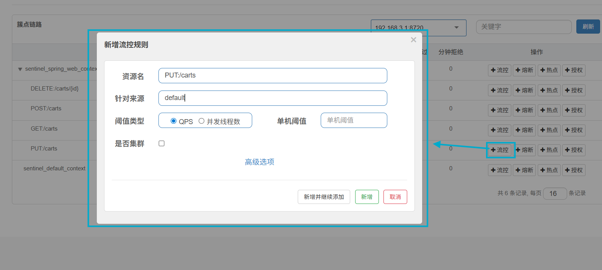
限流后，Sentinel 将会主动帮我们拒绝过量的请求：
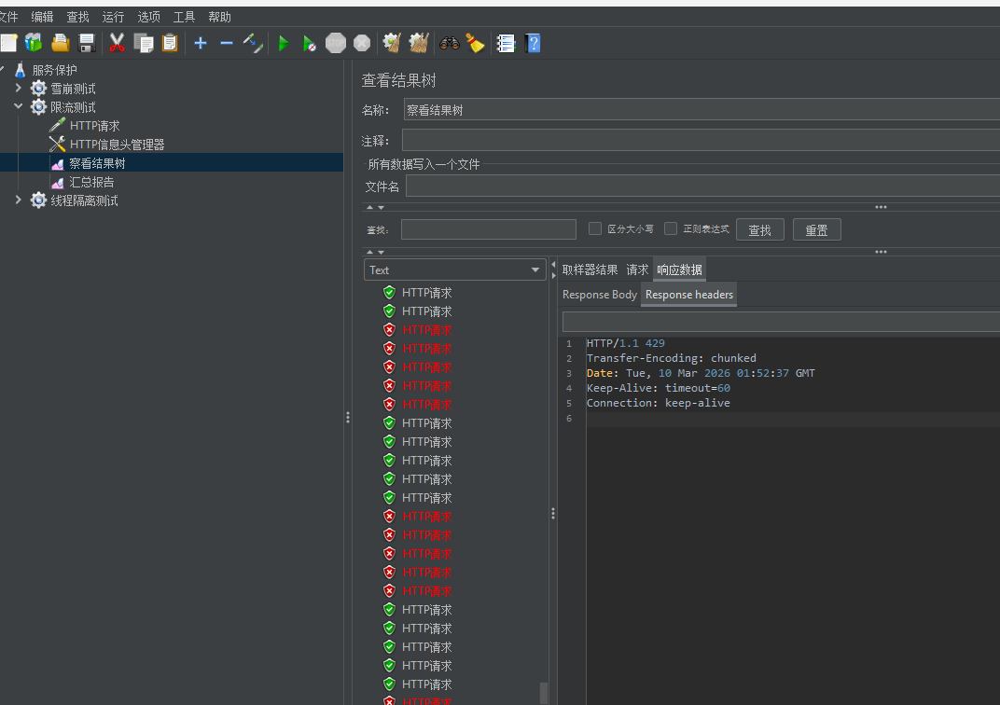
# 实现请求线程隔离
线程隔离通过限定每一个业务使用的服务数量，服务的请求者有有限的线程池来实现。
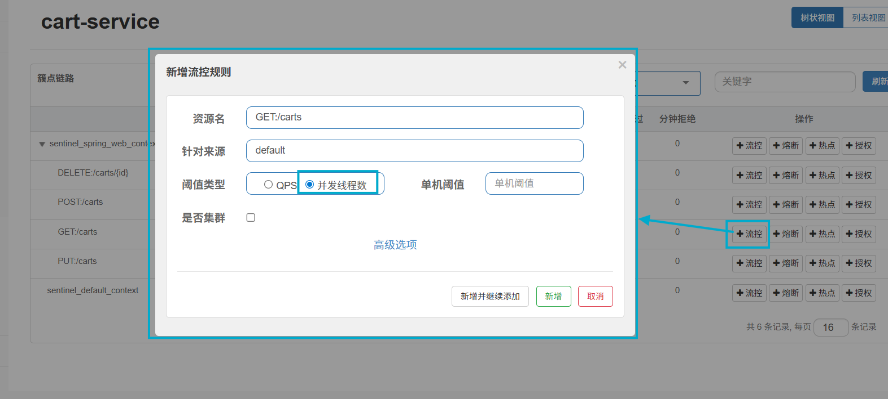
设置限制后，修改购物车仍然正常：
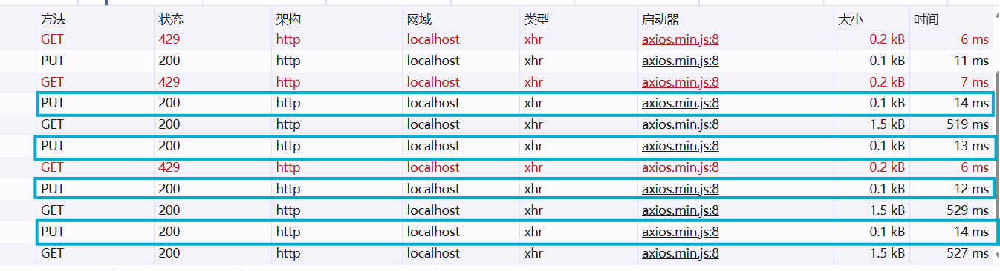
# 实现 Fallback 兜底
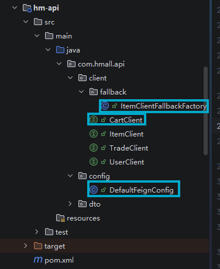
定义 FallbackFactory，实现兜底逻辑：
@Slf4j | |
public class ItemClientFallbackFactory implements FallbackFactory<ItemClient> { | |
@Override | |
public ItemClient create(Throwable cause) { | |
log.error("item-service服务调用失败，由于：", cause); | |
return new ItemClient() { | |
@Override | |
public List<ItemDTO> queryItemByIds(Collection<Long> ids) { | |
return CollUtils.emptyList(); | |
} | |
@Override | |
public void deductStock(Collection<OrderDetailDTO> items) { | |
throw new RuntimeException("item-service(deductStock)服务调用失败"); | |
} | |
}; | |
} | |
} |
在 FeignClient 添加 fallbackFactory
@FeignClient(value = "item-service", fallbackFactory = ItemClientFallbackFactory.class) | |
public interface ItemClient { | |
@GetMapping("/items") | |
List<ItemDTO> queryItemByIds(@RequestParam("ids") Collection<Long> ids); | |
@PutMapping("/items/stock/deduct") | |
void deductStock(@RequestBody Collection<OrderDetailDTO> items); | |
} |
在 Feign 的配置中注册 Bean：
@Bean | |
public ItemClientFallbackFactory itemClientFallbackFactory() { | |
return new ItemClientFallbackFactory(); | |
} |
记得加这里！
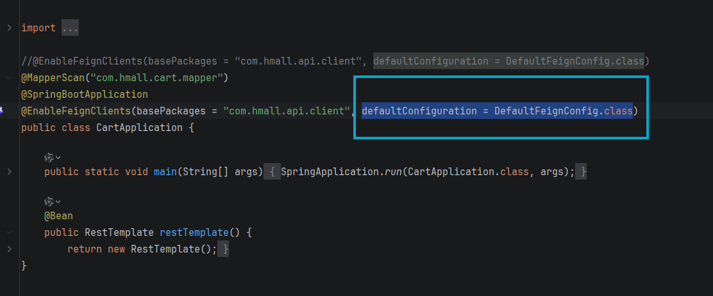
再一次访问购物车你就可以看到：
微服务之间的请求也出现在簇点链路之中了。
# 实现服务熔断
可以看到，第一次我们是使用的慢调用时间为 500ms 以上，尽管如此之慢还是成功查出来最新的价格，但已触发了熔断规则：
20s 内再次请求，我们可以发现，查询最新价格的红字消失了，这说明已经熔断了。
注意到 "newPrice": null, 为空，这是因为触发了兜底回调，我们的代码这样写道：
@Slf4j | |
public class ItemClientFallbackFactory implements FallbackFactory<ItemClient> { | |
@Override | |
public ItemClient create(Throwable cause) { | |
log.error("item-service服务调用失败，由于：", cause); | |
return new ItemClient() { | |
@Override | |
public List<ItemDTO> queryItemByIds(Collection<Long> ids) { | |
return CollUtils.emptyList(); | |
} | |
@Override | |
public void deductStock(Collection<OrderDetailDTO> items) { | |
throw new RuntimeException("item-service(deductStock)服务调用失败"); | |
} | |
}; | |
} | |
} |
可见返回了空列表，所以这就解释了为什么新价格也为空。
# 分布式事务
分布式事务必须保证一致性，一个报错大家要一起回滚。
# Seata 分布式事务解决方案
# TC 事务协调者
Transaction Coordinator 负责维护全局和分支事务的状态，协调全局事务提交或回滚。
# TM 事务管理者
Transaction Manager 定义全局事务的范围、开始事务、提交或回滚。
# RM 资源管理器
Resource Manager 管理分支事务，与 TC 交谈以注册分支事务和报告分支事务的状态。
# 部署 TC 服务并连接
# Seata——XA 模式
基于数据库层面的 XA 协议支持，主要强一致性保证，并对业务代码无侵入，但是它的性能相对较低。
# Seata——AT 模式
AT 模式是 Seata 主推的模式，避免了等待时间过长的问题，那么我们来看看他是怎么个结构。
收到请求，更新之后立即提交，并保存更新前的快照，如果大家都没事就删除快照，出问题那就回恢复快照。
# XA 与 AT 模式最大区别是什么？
XA模式一阶段不提交事务，锁定资源；AT模式一阶段直接提交，不锁定资源。XA模式依赖数据库机制实现回滚；AT模式利用数据快照实现数据回滚。XA模式强一致；AT模式最终一致
可见，AT 模式使用起来更加简单，无业务侵入，性能更好。因此企业 90% 的分布式事务都可以用 AT 模式来解决。
# AT 通过这张表实现回滚
-- for AT mode you must to init this sql for you business database. the seata server not need it. | |
CREATE TABLE IF NOT EXISTS `undo_log` | |
( | |
`branch_id` BIGINT NOT NULL COMMENT 'branch transaction id', | |
`xid` VARCHAR(128) NOT NULL COMMENT 'global transaction id', | |
`context` VARCHAR(128) NOT NULL COMMENT 'undo_log context,such as serialization', | |
`rollback_info` LONGBLOB NOT NULL COMMENT 'rollback info', | |
`log_status` INT(11) NOT NULL COMMENT '0:normal status,1:defense status', | |
`log_created` DATETIME(6) NOT NULL COMMENT 'create datetime', | |
`log_modified` DATETIME(6) NOT NULL COMMENT 'modify datetime', | |
UNIQUE KEY `ux_undo_log` (`xid`, `branch_id`) | |
) ENGINE = InnoDB | |
AUTO_INCREMENT = 1 | |
DEFAULT CHARSET = utf8mb4 COMMENT ='AT transaction mode undo table'; |
# RabbitMQ
在 RabbitMQ 之中有发布者和接收者，在发布者和接收者的中间有一个名叫队列与交换机的概念，大概的结构图如下图所示：
# 创建 Queue 并绑定 exchange
创建 Queue：
绑定 exchange：
# 写配置
spring: | |
rabbitmq: | |
host: 192.168.3.172 # 你的虚拟机 IP | |
port: 5672 # 端口 | |
virtual-host: /hmall # 虚拟主机 | |
username: hmall # 用户名 | |
password: 123 # 密码 |
# 发送消息
@SpringBootTest | |
class PublisherApplicationTest { | |
@Autowired | |
private RabbitTemplate rabbitTemplate; | |
@Test | |
public void test() { | |
// 队列名 | |
String queueName = "simple.queue"; | |
// 消息 | |
String message = "hello, spring amqp!"; | |
rabbitTemplate.convertAndSend(queueName, message); | |
} | |
} |
# 接收消息
@Slf4j | |
@Component | |
public class SpringRabbitListener { | |
@RabbitListener(queues = "simple.queue") | |
public void onMessage(String message) { | |
log.info("SpringRabbitListener 接收到消息：{}", message); | |
} | |
} |
# Work Queues
Work queues，任务模型。简单来说就是让多个消费者绑定到一个队列，共同消费队列中的消息。
@Test | |
public void testWorkQueue() { | |
// 队列名 | |
String queueName = "work.queue"; | |
// 消息 | |
for (int i = 0; i < 50; i++) { | |
String message = "hello,msg_" + i; | |
rabbitTemplate.convertAndSend(queueName, message); | |
} | |
} |
@RabbitListener(queues = "work.queue") | |
public void WorkQueue1(String message) { | |
System.out.println("W1：接收到消息" + message); | |
} | |
@RabbitListener(queues = "work.queue") | |
public void WorkQueue2(String message) { | |
System.err.println("W2：接收到消息" + message); | |
} |
W1：接收到消息 hello,msg_45
W1：接收到消息 hello,msg_47
W1：接收到消息 hello,msg_49
W2：接收到消息 hello,msg_0
W2：接收到消息 hello,msg_2
W2：接收到消息 hello,msg_4
W2：接收到消息 hello,msg_6
Work 模型的使用：
listener: | |
simple: | |
prefetch: 1 |
- 多个消费者绑定到一个队列，同一条消息只会被一个消费者处理
- 通过设置 prefetch 来控制消费者预取的消息数量
# 交换机
交换机的类型有四种：
- Fanout：广播，将消息交给所有绑定到交换机的队列。我们最早在控制台使用的正是 Fanout 交换机
- Direct：订阅，基于 RoutingKey（路由 key）发送给订阅了消息的队列
- Topic：通配符订阅，与 Direct 类似，只不过 RoutingKey 可以使用通配符
- Headers：头匹配，基于 MQ 的消息头匹配，用的
# Fanout 广播交换机
Exchange 只负责转发消息，不具备存储消息的能力，因此如果没有任何队列与 Exchange 绑定，或者没有符合路由规则的队列，那么消息会丢失！
@Test | |
public void testFanOut() { | |
// 交换机名 | |
String exchangeName = "amq.fanout"; | |
// 消息 | |
String message = "hello,msg！"; | |
rabbitTemplate.convertAndSend(exchangeName, "", message); | |
} |
@RabbitListener(queues = "fanout.queue1") | |
public void FanOutQueue1(String message) { | |
log.info("fanout.queue1：接收到消息{}", message); | |
} | |
@RabbitListener(queues = "fanout.queue2") | |
public void FanOutQueue2(String message) { | |
log.info("fanout.queue2：接收到消息{}", message); | |
} |
# Direct 定向交换机
To Routing key direct.queue1 blue direct.queue1 red direct.queue2 red direct.queue2 yellow
@Test | |
public void testDirect() { | |
// 交换机名 | |
String exchangeName = "amq.direct"; | |
// 消息 | |
String message = "hello,msg！"; | |
rabbitTemplate.convertAndSend(exchangeName, "yellow", message); | |
} |
@RabbitListener(queues = "direct.queue1") | |
public void DirectQueue1(String message) { | |
log.info("direct.queue1：接收到消息{}", message); | |
} | |
@RabbitListener(queues = "direct.queue2") | |
public void DirectQueue2(String message) { | |
log.info("direct.queue2：接收到消息{}", message); | |
} |
# Topic 交换机
Topic 类型的 Exchange 与 Direct 相比，都是可以根据 RoutingKey 把消息路由到不同的队列。
只不过 Topic 类型 Exchange 可以让队列在绑定 BindingKey 的时候使用通配符！
BindingKey 一般都是有一个或多个单词组成，多个单词之间以 . 分割，例如： item.insert
通配符规则：
#：匹配一个或多个词*：匹配不多不少恰好 1 个词
To Routing key topic.q1 china.# topic.q2 #.news
@Test | |
public void testTopic() { | |
// 交换机名 | |
String exchangeName = "amq.topic"; | |
// 消息 | |
String message = "hello,msg！"; | |
rabbitTemplate.convertAndSend(exchangeName, "japan.news", message); | |
} |
# 基于 Bean 的声明
@Configuration | |
public class FanoutConfiguration { | |
@Bean | |
public FanoutExchange fanoutExchange() { | |
return ExchangeBuilder.fanoutExchange("hmall.fanout").build(); | |
} | |
@Bean | |
public Queue fanoutQueue1() { | |
return QueueBuilder.durable("fanout.q1").build(); | |
} | |
@Bean | |
public Queue fanoutQueue2() { | |
return QueueBuilder.durable("fanout.q2").build(); | |
} | |
@Bean | |
public Binding fanoutQ2Binding() { | |
return BindingBuilder.bind(fanoutQueue2()).to(fanoutExchange()); | |
} | |
@Bean | |
public Binding fanoutQ1Binding() { | |
return BindingBuilder.bind(fanoutQueue1()).to(fanoutExchange()); | |
} | |
} |
# 基于注解的声明
这里 JavaBean 专注于交换机和队列的声明，而交换机和队列的关系交给注解 ：
@Configuration | |
public class DirectConfiguration { | |
@Bean | |
public DirectExchange directExchange() { | |
return ExchangeBuilder.directExchange("hmall.direct").build(); | |
} | |
@Bean | |
public Queue directQueue1() { | |
return QueueBuilder.durable("direct.q1").build(); | |
} | |
@Bean | |
public Queue directQueue2() { | |
return QueueBuilder.durable("direct.q2").build(); | |
} | |
} |
@RabbitListener(bindings = @QueueBinding( | |
value = @Queue(name = "direct.q1"), | |
exchange = @Exchange(name = "hmall.direct"), | |
key = {"blue", "red"} | |
)) | |
public void DirectQueue1(String message) { | |
log.info("direct.queue1：接收到消息{}", message); | |
} | |
@RabbitListener(bindings = @QueueBinding( | |
value = @Queue(name = "direct.q2"), | |
exchange = @Exchange(name = "hmall.direct"), | |
key = {"yellow", "red"} | |
)) | |
public void DirectQueue2(String message) { | |
log.info("direct.queue2：接收到消息{}", message); | |
} |
# JSON 消息转换器
原生的基于 JDK 的方式，并不安全，推荐使用：
<dependency> | |
<groupId>com.fasterxml.jackson.dataformat</groupId> | |
<artifactId>jackson-dataformat-xml</artifactId> | |
<version>2.9.10</version> | |
</dependency> |
收消息：
@RabbitListener(queues = "object.q") | |
public void ObjectQueue(HashMap<String, Object> user) { | |
log.info("object.q：接收到消息{}", user); | |
} |
发消息：
@Test | |
public void testSend() { | |
String exchangeName = "object.q"; | |
HashMap<String, Object> stringObjectHashMap = new HashMap<>(2); | |
stringObjectHashMap.put("name", "KarryLiu"); | |
stringObjectHashMap.put("age", 18); | |
rabbitTemplate.convertAndSend(exchangeName, stringObjectHashMap); | |
} |